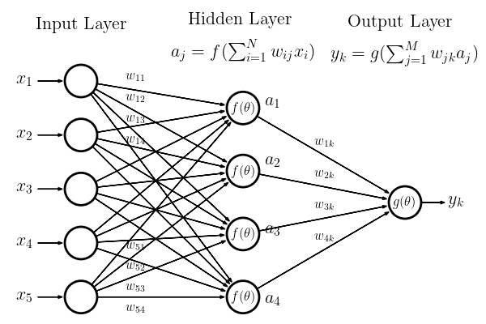

<!DOCTYPE html>


<html lang="en" data-content_root="./" >

  <head>
    <meta charset="utf-8" />
    <meta name="viewport" content="width=device-width, initial-scale=1.0" /><meta name="viewport" content="width=device-width, initial-scale=1" />

    <title>Hands-on 04: Image data and CNNs: Classifying astronomical images &#8212; UCSD PHYS 139/239</title>
  
  
  
  <script data-cfasync="false">
    document.documentElement.dataset.mode = localStorage.getItem("mode") || "";
    document.documentElement.dataset.theme = localStorage.getItem("theme") || "";
  </script>
  
  <!-- Loaded before other Sphinx assets -->
  <link href="_static/styles/theme.css?digest=dfe6caa3a7d634c4db9b" rel="stylesheet" />
<link href="_static/styles/bootstrap.css?digest=dfe6caa3a7d634c4db9b" rel="stylesheet" />
<link href="_static/styles/pydata-sphinx-theme.css?digest=dfe6caa3a7d634c4db9b" rel="stylesheet" />

  
  <link href="_static/vendor/fontawesome/6.5.2/css/all.min.css?digest=dfe6caa3a7d634c4db9b" rel="stylesheet" />
  <link rel="preload" as="font" type="font/woff2" crossorigin href="_static/vendor/fontawesome/6.5.2/webfonts/fa-solid-900.woff2" />
<link rel="preload" as="font" type="font/woff2" crossorigin href="_static/vendor/fontawesome/6.5.2/webfonts/fa-brands-400.woff2" />
<link rel="preload" as="font" type="font/woff2" crossorigin href="_static/vendor/fontawesome/6.5.2/webfonts/fa-regular-400.woff2" />

    <link rel="stylesheet" type="text/css" href="_static/pygments.css?v=03e43079" />
    <link rel="stylesheet" type="text/css" href="_static/styles/sphinx-book-theme.css?v=eba8b062" />
    <link rel="stylesheet" type="text/css" href="_static/togglebutton.css?v=13237357" />
    <link rel="stylesheet" type="text/css" href="_static/copybutton.css?v=76b2166b" />
    <link rel="stylesheet" type="text/css" href="_static/mystnb.8ecb98da25f57f5357bf6f572d296f466b2cfe2517ffebfabe82451661e28f02.css" />
    <link rel="stylesheet" type="text/css" href="_static/sphinx-thebe.css?v=4fa983c6" />
    <link rel="stylesheet" type="text/css" href="_static/sphinx-design.min.css?v=95c83b7e" />
  
  <!-- Pre-loaded scripts that we'll load fully later -->
  <link rel="preload" as="script" href="_static/scripts/bootstrap.js?digest=dfe6caa3a7d634c4db9b" />
<link rel="preload" as="script" href="_static/scripts/pydata-sphinx-theme.js?digest=dfe6caa3a7d634c4db9b" />
  <script src="_static/vendor/fontawesome/6.5.2/js/all.min.js?digest=dfe6caa3a7d634c4db9b"></script>

    <script src="_static/documentation_options.js?v=9eb32ce0"></script>
    <script src="_static/doctools.js?v=9a2dae69"></script>
    <script src="_static/sphinx_highlight.js?v=dc90522c"></script>
    <script src="_static/clipboard.min.js?v=a7894cd8"></script>
    <script src="_static/copybutton.js?v=f281be69"></script>
    <script src="_static/scripts/sphinx-book-theme.js?v=887ef09a"></script>
    <script>let toggleHintShow = 'Click to show';</script>
    <script>let toggleHintHide = 'Click to hide';</script>
    <script>let toggleOpenOnPrint = 'true';</script>
    <script src="_static/togglebutton.js?v=4a39c7ea"></script>
    <script>var togglebuttonSelector = '.toggle, .admonition.dropdown';</script>
    <script src="_static/design-tabs.js?v=f930bc37"></script>
    <script>const THEBE_JS_URL = "https://unpkg.com/thebe@0.8.2/lib/index.js"; const thebe_selector = ".thebe,.cell"; const thebe_selector_input = "pre"; const thebe_selector_output = ".output, .cell_output"</script>
    <script async="async" src="_static/sphinx-thebe.js?v=c100c467"></script>
    <script>var togglebuttonSelector = '.toggle, .admonition.dropdown';</script>
    <script>const THEBE_JS_URL = "https://unpkg.com/thebe@0.8.2/lib/index.js"; const thebe_selector = ".thebe,.cell"; const thebe_selector_input = "pre"; const thebe_selector_output = ".output, .cell_output"</script>
    <script>window.MathJax = {"options": {"processHtmlClass": "tex2jax_process|mathjax_process|math|output_area"}}</script>
    <script defer="defer" src="https://cdn.jsdelivr.net/npm/mathjax@3/es5/tex-mml-chtml.js"></script>
    <script>DOCUMENTATION_OPTIONS.pagename = '04_Image_Data_CNN';</script>
    <link rel="canonical" href="https://jduarte.physics.ucsd.edu/phys139_239/04_Image_Data_CNN.html" />
    <link rel="index" title="Index" href="genindex.html" />
    <link rel="search" title="Search" href="search.html" />
    <link rel="next" title="Hands-on 05: Time series data and RNNs: Identifying cosmic rays in radio signals" href="05_Time_Series_Data_RNN.html" />
    <link rel="prev" title="Hands-on 03: Tabular data and NNs: Classifying particle jets" href="03_Tabular_Data_NN.html" />
  <meta name="viewport" content="width=device-width, initial-scale=1"/>
  <meta name="docsearch:language" content="en"/>
  </head>
  
  
  <body data-bs-spy="scroll" data-bs-target=".bd-toc-nav" data-offset="180" data-bs-root-margin="0px 0px -60%" data-default-mode="">

  
  
  <div id="pst-skip-link" class="skip-link d-print-none"><a href="#main-content">Skip to main content</a></div>
  
  <div id="pst-scroll-pixel-helper"></div>
  
  <button type="button" class="btn rounded-pill" id="pst-back-to-top">
    <i class="fa-solid fa-arrow-up"></i>Back to top</button>

  
  <input type="checkbox"
          class="sidebar-toggle"
          id="pst-primary-sidebar-checkbox"/>
  <label class="overlay overlay-primary" for="pst-primary-sidebar-checkbox"></label>
  
  <input type="checkbox"
          class="sidebar-toggle"
          id="pst-secondary-sidebar-checkbox"/>
  <label class="overlay overlay-secondary" for="pst-secondary-sidebar-checkbox"></label>
  
  <div class="search-button__wrapper">
    <div class="search-button__overlay"></div>
    <div class="search-button__search-container">
<form class="bd-search d-flex align-items-center"
      action="search.html"
      method="get">
  <i class="fa-solid fa-magnifying-glass"></i>
  <input type="search"
         class="form-control"
         name="q"
         id="search-input"
         placeholder="Search this book..."
         aria-label="Search this book..."
         autocomplete="off"
         autocorrect="off"
         autocapitalize="off"
         spellcheck="false"/>
  <span class="search-button__kbd-shortcut"><kbd class="kbd-shortcut__modifier">Ctrl</kbd>+<kbd>K</kbd></span>
</form></div>
  </div>

  <div class="pst-async-banner-revealer d-none">
  <aside id="bd-header-version-warning" class="d-none d-print-none" aria-label="Version warning"></aside>
</div>

  
    <header class="bd-header navbar navbar-expand-lg bd-navbar d-print-none">
    </header>
  

  <div class="bd-container">
    <div class="bd-container__inner bd-page-width">
      
      
      
      <div class="bd-sidebar-primary bd-sidebar">
        

  
  <div class="sidebar-header-items sidebar-primary__section">
    
    
    
    
  </div>
  
    <div class="sidebar-primary-items__start sidebar-primary__section">
        <div class="sidebar-primary-item">

  
    
  

<a class="navbar-brand logo" href="README.html">
  
  
  
  
  
    
    
      
    
    
    
    <script>document.write(``);</script>
  
  
</a></div>
        <div class="sidebar-primary-item">

 <script>
 document.write(`
   <button class="btn search-button-field search-button__button" title="Search" aria-label="Search" data-bs-placement="bottom" data-bs-toggle="tooltip">
    <i class="fa-solid fa-magnifying-glass"></i>
    <span class="search-button__default-text">Search</span>
    <span class="search-button__kbd-shortcut"><kbd class="kbd-shortcut__modifier">Ctrl</kbd>+<kbd class="kbd-shortcut__modifier">K</kbd></span>
   </button>
 `);
 </script></div>
        <div class="sidebar-primary-item"><nav class="bd-links bd-docs-nav" aria-label="Main">
    <div class="bd-toc-item navbar-nav active">
        
        <ul class="nav bd-sidenav bd-sidenav__home-link">
            <li class="toctree-l1">
                <a class="reference internal" href="README.html">
                    UCSD PHYS 139/239: Machine Learning in Physics
                </a>
            </li>
        </ul>
        <p aria-level="2" class="caption" role="heading"><span class="caption-text">Week 1</span></p>
<ul class="nav bd-sidenav">
<li class="toctree-l1"><a class="reference external" href="https://jduarte.physics.ucsd.edu/phys139_239/lectures/01_Introduction.pdf">Lecture 01: Introduction</a></li>
<li class="toctree-l1"><a class="reference external" href="https://jduarte.physics.ucsd.edu/phys139_239/lectures/02_Perceptron_SGD.pdf">Lecture 02: Perceptron and stochastic gradient descent</a></li>
<li class="toctree-l1"><a class="reference internal" href="01a_Introduction.html">Hands-on 01a: Introduction</a></li>
<li class="toctree-l1"><a class="reference internal" href="01b_Debugging.html">Hands-on 01b: Debugging</a></li>
<li class="toctree-l1"><a class="reference external" href="https://jduarte.physics.ucsd.edu/phys139_239/homework_1.pdf">Homework 1 (due Week 2)</a></li>
</ul>
<p aria-level="2" class="caption" role="heading"><span class="caption-text">Week 2</span></p>
<ul class="nav bd-sidenav">
<li class="toctree-l1"><a class="reference external" href="https://jduarte.physics.ucsd.edu/phys139_239/lectures/03_SVM_Logistic.pdf">Lecture 03: Support vector machine and logistic regression</a></li>
<li class="toctree-l1"><a class="reference external" href="https://jduarte.physics.ucsd.edu/phys139_239/lectures/04_Trees.pdf">Lecture 04: (Boosted) decision trees</a></li>
<li class="toctree-l1"><a class="reference internal" href="02_Tabular_Data_BDT.html">Hands-on 02: Tabular data and BDTs: Classifying LHC collisions</a></li>
</ul>
<p aria-level="2" class="caption" role="heading"><span class="caption-text">Week 3</span></p>
<ul class="nav bd-sidenav">
<li class="toctree-l1"><a class="reference external" href="https://jduarte.physics.ucsd.edu/phys139_239/lectures/05_Neural_Networks.pdf">Lecture 05: Neural networks</a></li>
<li class="toctree-l1"><a class="reference external" href="https://jduarte.physics.ucsd.edu/phys139_239/lectures/06_Optimizers.pdf">Lecture 06: Optimizing neural networks</a></li>
<li class="toctree-l1"><a class="reference internal" href="03_Tabular_Data_NN.html">Hands-on 03: Tabular data and NNs: Classifying particle jets</a></li>
<li class="toctree-l1"><a class="reference external" href="https://jduarte.physics.ucsd.edu/phys139_239/homework_2.pdf">Homework 2 (due Week 4)</a></li>
</ul>
<p aria-level="2" class="caption" role="heading"><span class="caption-text">Week 4</span></p>
<ul class="current nav bd-sidenav">
<li class="toctree-l1"><a class="reference external" href="https://jduarte.physics.ucsd.edu/phys139_239/lectures/07_CNNs.pdf">Lecture 07: Convolutional neural networks</a></li>
<li class="toctree-l1"><a class="reference external" href="https://jduarte.physics.ucsd.edu/phys139_239/lectures/08_Advanced_CNNs.pdf">Lecture 08: Advanced convolutional neural networks</a></li>
<li class="toctree-l1 current active"><a class="current reference internal" href="#">Hands-on 04: Image data and CNNs: Classifying astronomical images</a></li>
</ul>
<p aria-level="2" class="caption" role="heading"><span class="caption-text">Week 5</span></p>
<ul class="nav bd-sidenav">
<li class="toctree-l1"><a class="reference external" href="https://jduarte.physics.ucsd.edu/phys139_239/lectures/09_Time_Series_RNNs.pdf">Lecture 09: Time series and recurrent neural networks</a></li>
<li class="toctree-l1"><a class="reference external" href="https://jduarte.physics.ucsd.edu/phys139_239/lectures/10_More_RNNs.pdf">Lecture 10: More recurrent neural networks</a></li>
<li class="toctree-l1"><a class="reference internal" href="05_Time_Series_Data_RNN.html">Hands-on 05: Time series data and RNNs: Identifying cosmic rays in radio signals</a></li>
<li class="toctree-l1"><a class="reference external" href="https://jduarte.physics.ucsd.edu/phys139_239/homework_3.pdf">Homework 3 (due Week 6)</a></li>
</ul>
<p aria-level="2" class="caption" role="heading"><span class="caption-text">Week 6</span></p>
<ul class="nav bd-sidenav">
<li class="toctree-l1"><a class="reference external" href="https://jduarte.physics.ucsd.edu/phys139_239/lectures/11_GNNs.pdf">Lecture 11: Graph neural networks</a></li>
<li class="toctree-l1"><a class="reference external" href="https://jduarte.physics.ucsd.edu/phys139_239/lectures/12_More_GNNs.pdf">Lecture 12: More graph neural networks and transformers</a></li>
<li class="toctree-l1"><a class="reference internal" href="06_Graph_Data_GNN.html">Hands-on 06: Graph data and GNNs: Tagging Higgs boson jets</a></li>
</ul>
<p aria-level="2" class="caption" role="heading"><span class="caption-text">Week 7</span></p>
<ul class="nav bd-sidenav">
<li class="toctree-l1"><a class="reference external" href="https://jduarte.physics.ucsd.edu/phys139_239/lectures/13_Unsupervised.pdf">Lecture 13: Unsupervised learning</a></li>
<li class="toctree-l1"><a class="reference external" href="https://jduarte.physics.ucsd.edu/phys139_239/lectures/14_More_Autoencoders.pdf">Lecture 14: More autoencoers</a></li>
<li class="toctree-l1"><a class="reference internal" href="07_Autoencoder.html">Hands-on 07: Autoencoders for anomaly detection</a></li>
<li class="toctree-l1"><a class="reference external" href="https://jduarte.physics.ucsd.edu/phys139_239/homework_4.pdf">Homework 4 (due Week 8)</a></li>
</ul>
<p aria-level="2" class="caption" role="heading"><span class="caption-text">Week 8</span></p>
<ul class="nav bd-sidenav">
<li class="toctree-l1"><a class="reference external" href="https://jduarte.physics.ucsd.edu/phys139_239/lectures/15_Model_Compression.pdf">Lecture 15: Model compression</a></li>
<li class="toctree-l1"><a class="reference external" href="https://jduarte.physics.ucsd.edu/phys139_239/lectures/16_Knowledge_Distillation.pdf">Lecture 16: Knowledge distillation</a></li>
<li class="toctree-l1"><a class="reference internal" href="08_Compression.html">Hands-on 08: Model Compression</a></li>
</ul>
<p aria-level="2" class="caption" role="heading"><span class="caption-text">Week 9</span></p>
<ul class="nav bd-sidenav">
<li class="toctree-l1"><a class="reference external" href="https://jduarte.physics.ucsd.edu/phys139_239/lectures/17_Generative_Modeling.pdf">(Guest) Lecture 17: Generative modeling by Dr. Benjamin Nachman</a></li>
<li class="toctree-l1"><a class="reference external" href="https://jduarte.physics.ucsd.edu/phys139_239/lectures/18_Equivariant_NNs.pdf">(Guest) Lecture 18: Equivariant neural networks by Prof. Rose Yu and Jianke Yang</a></li>
</ul>
<p aria-level="2" class="caption" role="heading"><span class="caption-text">Week 10</span></p>
<ul class="nav bd-sidenav">
<li class="toctree-l1"><a class="reference external" href="https://jduarte.physics.ucsd.edu/phys139_239/lectures/19_PINNs.pdf">(Guest) Lecture 19: Physics-informed neural networks by Dr. Amir Gholami</a></li>
</ul>
<p aria-level="2" class="caption" role="heading"><span class="caption-text">Finals Week</span></p>
<ul class="nav bd-sidenav">
<li class="toctree-l1"><a class="reference internal" href="finalprojects.html">Final Projects</a></li>
</ul>
<p aria-level="2" class="caption" role="heading"><span class="caption-text">References</span></p>
<ul class="nav bd-sidenav">
<li class="toctree-l1"><a class="reference internal" href="zreferences.html">References</a></li>
</ul>

    </div>
</nav></div>
    </div>
  
  
  <div class="sidebar-primary-items__end sidebar-primary__section">
  </div>
  
  <div id="rtd-footer-container"></div>


      </div>
      
      <main id="main-content" class="bd-main" role="main">
        
        

<div class="sbt-scroll-pixel-helper"></div>

          <div class="bd-content">
            <div class="bd-article-container">
              
              <div class="bd-header-article d-print-none">
<div class="header-article-items header-article__inner">
  
    <div class="header-article-items__start">
      
        <div class="header-article-item"><button class="sidebar-toggle primary-toggle btn btn-sm" title="Toggle primary sidebar" data-bs-placement="bottom" data-bs-toggle="tooltip">
  <span class="fa-solid fa-bars"></span>
</button></div>
      
    </div>
  
  
    <div class="header-article-items__end">
      
        <div class="header-article-item">

<div class="article-header-buttons">


<div class="dropdown dropdown-launch-buttons">
  <button class="btn dropdown-toggle" type="button" data-bs-toggle="dropdown" aria-expanded="false" aria-label="Launch interactive content">
    <i class="fas fa-rocket"></i>
  </button>
  <ul class="dropdown-menu">
      
      
      
      <li><a href="https://mybinder.org/v2/gh/jmduarte/phys139_239/main?urlpath=tree/notebooks/04_Image_Data_CNN.ipynb" target="_blank"
   class="btn btn-sm dropdown-item"
   title="Launch on Binder"
   data-bs-placement="left" data-bs-toggle="tooltip"
>
  

<span class="btn__icon-container">
  
    
  </span>
<span class="btn__text-container">Binder</span>
</a>
</li>
      
      
      
      
      <li><a href="https://datahub.ucsd.edu/hub/user-redirect/git-pull?repo=https%3A//github.com/jmduarte/phys139_239&urlpath=tree/phys139_239/notebooks/04_Image_Data_CNN.ipynb&branch=main" target="_blank"
   class="btn btn-sm dropdown-item"
   title="Launch on JupyterHub"
   data-bs-placement="left" data-bs-toggle="tooltip"
>
  

<span class="btn__icon-container">
  
    
  </span>
<span class="btn__text-container">JupyterHub</span>
</a>
</li>
      
      
      
      
      <li><a href="https://colab.research.google.com/github/jmduarte/phys139_239/blob/main/notebooks/04_Image_Data_CNN.ipynb" target="_blank"
   class="btn btn-sm dropdown-item"
   title="Launch on Colab"
   data-bs-placement="left" data-bs-toggle="tooltip"
>
  

<span class="btn__icon-container">
  
    
  </span>
<span class="btn__text-container">Colab</span>
</a>
</li>
      
  </ul>
</div>


<div class="dropdown dropdown-source-buttons">
  <button class="btn dropdown-toggle" type="button" data-bs-toggle="dropdown" aria-expanded="false" aria-label="Source repositories">
    <i class="fab fa-github"></i>
  </button>
  <ul class="dropdown-menu">
      
      
      
      <li><a href="https://github.com/jmduarte/phys139_239" target="_blank"
   class="btn btn-sm btn-source-repository-button dropdown-item"
   title="Source repository"
   data-bs-placement="left" data-bs-toggle="tooltip"
>
  

<span class="btn__icon-container">
  <i class="fab fa-github"></i>
  </span>
<span class="btn__text-container">Repository</span>
</a>
</li>
      
      
      
      
      <li><a href="https://github.com/jmduarte/phys139_239/issues/new?title=Issue%20on%20page%20%2F04_Image_Data_CNN.html&body=Your%20issue%20content%20here." target="_blank"
   class="btn btn-sm btn-source-issues-button dropdown-item"
   title="Open an issue"
   data-bs-placement="left" data-bs-toggle="tooltip"
>
  

<span class="btn__icon-container">
  <i class="fas fa-lightbulb"></i>
  </span>
<span class="btn__text-container">Open issue</span>
</a>
</li>
      
  </ul>
</div>


<div class="dropdown dropdown-download-buttons">
  <button class="btn dropdown-toggle" type="button" data-bs-toggle="dropdown" aria-expanded="false" aria-label="Download this page">
    <i class="fas fa-download"></i>
  </button>
  <ul class="dropdown-menu">
      
      
      
      <li><a href="_sources/04_Image_Data_CNN.ipynb" target="_blank"
   class="btn btn-sm btn-download-source-button dropdown-item"
   title="Download source file"
   data-bs-placement="left" data-bs-toggle="tooltip"
>
  

<span class="btn__icon-container">
  <i class="fas fa-file"></i>
  </span>
<span class="btn__text-container">.ipynb</span>
</a>
</li>
      
      
      
      
      <li>
<button onclick="window.print()"
  class="btn btn-sm btn-download-pdf-button dropdown-item"
  title="Print to PDF"
  data-bs-placement="left" data-bs-toggle="tooltip"
>
  

<span class="btn__icon-container">
  <i class="fas fa-file-pdf"></i>
  </span>
<span class="btn__text-container">.pdf</span>
</button>
</li>
      
  </ul>
</div>


<button onclick="toggleFullScreen()"
  class="btn btn-sm btn-fullscreen-button"
  title="Fullscreen mode"
  data-bs-placement="bottom" data-bs-toggle="tooltip"
>
  

<span class="btn__icon-container">
  <i class="fas fa-expand"></i>
  </span>

</button>


<script>
document.write(`
  <button class="btn btn-sm nav-link pst-navbar-icon theme-switch-button" title="light/dark" aria-label="light/dark" data-bs-placement="bottom" data-bs-toggle="tooltip">
    <i class="theme-switch fa-solid fa-sun fa-lg" data-mode="light"></i>
    <i class="theme-switch fa-solid fa-moon fa-lg" data-mode="dark"></i>
    <i class="theme-switch fa-solid fa-circle-half-stroke fa-lg" data-mode="auto"></i>
  </button>
`);
</script>


<script>
document.write(`
  <button class="btn btn-sm pst-navbar-icon search-button search-button__button" title="Search" aria-label="Search" data-bs-placement="bottom" data-bs-toggle="tooltip">
    <i class="fa-solid fa-magnifying-glass fa-lg"></i>
  </button>
`);
</script>
<button class="sidebar-toggle secondary-toggle btn btn-sm" title="Toggle secondary sidebar" data-bs-placement="bottom" data-bs-toggle="tooltip">
    <span class="fa-solid fa-list"></span>
</button>
</div></div>
      
    </div>
  
</div>
</div>
              
              

<div id="jb-print-docs-body" class="onlyprint">
    <h1>Hands-on 04: Image data and CNNs: Classifying astronomical images</h1>
    <!-- Table of contents -->
    <div id="print-main-content">
        <div id="jb-print-toc">
            
            <div>
                <h2> Contents </h2>
            </div>
            <nav aria-label="Page">
                <ul class="visible nav section-nav flex-column">
<li class="toc-h2 nav-item toc-entry"><a class="reference internal nav-link" href="#loading-some-visualization-and-helper-functions">Loading some visualization and helper functions</a></li>
<li class="toc-h2 nav-item toc-entry"><a class="reference internal nav-link" href="#load-the-training-samples-and-create-test-and-validation-data-sets">Load the training samples and create test and validation data sets</a></li>
<li class="toc-h2 nav-item toc-entry"><a class="reference internal nav-link" href="#create-a-training-validation-and-test-sample">Create a training, validation, and test sample</a></li>
<li class="toc-h2 nav-item toc-entry"><a class="reference internal nav-link" href="#neural-network-frameworks">Neural network frameworks</a><ul class="nav section-nav flex-column">
<li class="toc-h3 nav-item toc-entry"><a class="reference internal nav-link" href="#tensorflow-keras">TensorFlow + Keras:</a></li>
<li class="toc-h3 nav-item toc-entry"><a class="reference internal nav-link" href="#pytorch">PyTorch:</a></li>
<li class="toc-h3 nav-item toc-entry"><a class="reference internal nav-link" href="#building-a-network">Building a network:</a></li>
<li class="toc-h3 nav-item toc-entry"><a class="reference internal nav-link" href="#training-the-network">Training the network</a></li>
</ul>
</li>
<li class="toc-h2 nav-item toc-entry"><a class="reference internal nav-link" href="#creating-a-neural-network-with-keras">Creating a neural network with Keras</a><ul class="nav section-nav flex-column">
<li class="toc-h3 nav-item toc-entry"><a class="reference internal nav-link" href="#excercise">Excercise</a></li>
<li class="toc-h3 nav-item toc-entry"><a class="reference internal nav-link" href="#performance-of-the-network">Performance of the network</a></li>
<li class="toc-h3 nav-item toc-entry"><a class="reference internal nav-link" href="#batch-normalization">Batch normalization</a></li>
<li class="toc-h3 nav-item toc-entry"><a class="reference internal nav-link" href="#convolutional-neural-networks">Convolutional neural networks</a></li>
<li class="toc-h3 nav-item toc-entry"><a class="reference internal nav-link" href="#cnns-increasing-the-complexity-of-the-architecture-with-vgg6">CNNs: Increasing the complexity of the architecture with VGG6</a></li>
<li class="toc-h3 nav-item toc-entry"><a class="reference internal nav-link" href="#the-use-of-dropout-layers">The use of dropout layers</a></li>
<li class="toc-h3 nav-item toc-entry"><a class="reference internal nav-link" href="#interpreting-networks-how-many-layers-and-how-many-neurons">Interpreting networks: how many layers and how many neurons?</a></li>
<li class="toc-h3 nav-item toc-entry"><a class="reference internal nav-link" href="#interpreting-networks-where-is-a-network-looking">Interpreting networks: where is a network looking</a></li>
<li class="toc-h3 nav-item toc-entry"><a class="reference internal nav-link" href="#exercise-for-the-reader-more-complicated-architectures-resnet50">Exercise for the reader: more complicated architectures: resnet50</a></li>
</ul>
</li>
</ul>
            </nav>
        </div>
    </div>
</div>

              
                
<div id="searchbox"></div>
                <article class="bd-article">
                  
  <section class="tex2jax_ignore mathjax_ignore" id="hands-on-04-image-data-and-cnns-classifying-astronomical-images">
<h1>Hands-on 04: Image data and CNNs: Classifying astronomical images<a class="headerlink" href="#hands-on-04-image-data-and-cnns-classifying-astronomical-images" title="Link to this heading">#</a></h1>
<p><a class="reference external" href="http://faculty.washington.edu/ajc26/">Original Author: Andrew Connolly, University of Washington</a>
Thanks to Hayden Smotherman, University of Washington for the example networks.</p>
<p>In this notebook we work through a simple example for a neural network using Keras.
Initially we will start with a vanila network with two hidden layers and then expand this to a convolutional neural network with drop out layers and batch normalization.</p>
<p>Deep learning, an extension of the neural networks that were popularized in the 1990s.
The concepts are inspired by the structure and function of the brain.
A neuron in the brain is a core computational unit that takes a series of inputs from branched extensions of the neuron called dendrites, operates on these inputs, and generates an output that is transmitted along an axon to one or more other neurons.
In the context of a neural network a neuron, <span class="math notranslate nohighlight">\(j\)</span>, takes a set of inputs, <span class="math notranslate nohighlight">\(x_i\)</span>, applies a, typically nonlinear, function to these inputs and generates an output value. Networks are then created by connecting multiple neurons or layers of neurons to one another.</p>
<p></p>
<p>If we consider the simplified network inputs are passed to the neurons in the network.
Each input is weighted by a value, <span class="math notranslate nohighlight">\(w_{ij}\)</span> and the sum of these weighted inputs is operated on by a response or activation function <span class="math notranslate nohighlight">\(f(\theta)\)</span>, which transform the input signal so that it varies between 0 and 1 through the application of a nonlinear response.
The output from any neuron is then given by,</p>
<div class="math notranslate nohighlight">
\[
a_j =  f  \left( \sum_i w_{ij} x_i + b_j \right)
\]</div>
<p>where <span class="math notranslate nohighlight">\(b_j\)</span> is a bias term which determines the input level at which the neuron becomes activated.</p>
<p>We refer to the neurons between the inputs and the output layers as the hidden layers.
If the neurons from one layer connect to all neurons in a subsequent layer we call this a fully connected layer.
When the outputs from the neurons only connect to subsequent layers (i.e. the graph is acyclic) we refer to this as a feed-forward network – this is the most common structure for a neural network used in classification.</p>
<p>The final layer in the network is the output layer.
As with the hidden layer, an activation function, <span class="math notranslate nohighlight">\(g(\theta)\)</span>, in the output layer acts on the weighted sum of its inputs.
In this figure we have a single output node but there can be multiple outputs. For our example  network the output from the final neuron, <span class="math notranslate nohighlight">\(y_k\)</span>, would be given by</p>
<div class="math notranslate nohighlight">
\[
y_k = g \left( \sum_j   w_{jk} a_j  + b_k \right)  = g\left( \sum_j
  w_{jk}  f \left( \sum_i w_{ij} x_i + b_j\right) + b_k\right)
\]</div>
<p><strong>Training of the network is simply the learning of the weights and bias values</strong></p>
<div class="cell docutils container">
<div class="cell_input docutils container">
<div class="highlight-ipython3 notranslate"><div class="highlight"><pre><span></span><span class="c1"># to reduce the deprecation warnings</span>
<span class="kn">import</span><span class="w"> </span><span class="nn">warnings</span>

<span class="n">warnings</span><span class="o">.</span><span class="n">filterwarnings</span><span class="p">(</span><span class="s2">&quot;ignore&quot;</span><span class="p">)</span>
</pre></div>
</div>
</div>
</div>
<div class="cell docutils container">
<div class="cell_input docutils container">
<div class="highlight-ipython3 notranslate"><div class="highlight"><pre><span></span><span class="kn">import</span><span class="w"> </span><span class="nn">numpy</span><span class="w"> </span><span class="k">as</span><span class="w"> </span><span class="nn">np</span>
<span class="kn">import</span><span class="w"> </span><span class="nn">matplotlib.pyplot</span><span class="w"> </span><span class="k">as</span><span class="w"> </span><span class="nn">plt</span>

<span class="o">%</span><span class="k">matplotlib</span> inline
</pre></div>
</div>
</div>
</div>
<section id="loading-some-visualization-and-helper-functions">
<h2>Loading some visualization and helper functions<a class="headerlink" href="#loading-some-visualization-and-helper-functions" title="Link to this heading">#</a></h2>
<p>These helper functions  <code class="docutils literal notranslate"><span class="pre">normalize_image</span></code>, <code class="docutils literal notranslate"><span class="pre">plot_image_array</span></code>, <code class="docutils literal notranslate"><span class="pre">plot_confusion_matrix</span></code>, <code class="docutils literal notranslate"><span class="pre">plot_model_history</span></code> will be used to visualize the data and the outputs of the neural networks as a function of the type and complexity of the network</p>
<div class="cell docutils container">
<div class="cell_input docutils container">
<div class="highlight-ipython3 notranslate"><div class="highlight"><pre><span></span><span class="kn">from</span><span class="w"> </span><span class="nn">plotting</span><span class="w"> </span><span class="kn">import</span> <span class="n">normalize_image</span><span class="p">,</span> <span class="n">plot_image_array</span><span class="p">,</span> <span class="n">plot_confusion_matrix</span><span class="p">,</span> <span class="n">plot_model_history</span>
</pre></div>
</div>
</div>
</div>
</section>
<section id="load-the-training-samples-and-create-test-and-validation-data-sets">
<h2>Load the training samples and create test and validation data sets<a class="headerlink" href="#load-the-training-samples-and-create-test-and-validation-data-sets" title="Link to this heading">#</a></h2>
<p>The data we are using is taken from a survey for NEOs by Lori Allen and collaborators using DECam on the Blanco 4m Telescope at CTIO.
The data comprise a stack of images taken over a period of 5 nights. Within these images we search for slowly moving sources (TNOs) along potential orbital trajectories.
Given these trajectories we coadd the images. Our goal is to determine whether there is a point source within the coadded images.
The training sample includes images of simulated TNOs (true positives; <code class="docutils literal notranslate"><span class="pre">stamps_sources.npz</span></code>) and random trajectories where there is no known source (false positives; <code class="docutils literal notranslate"><span class="pre">stamps_noise.npz</span></code>).
The true positives range in signal-to-noise from 100 to 3</p>
<div class="cell docutils container">
<div class="cell_input docutils container">
<div class="highlight-ipython3 notranslate"><div class="highlight"><pre><span></span><span class="c1"># Brute force direct downloads source and noise images to circumvent size limitations</span>
<span class="c1"># for google drive internal virus scan. Download may take some time.</span>

<span class="kn">import</span><span class="w"> </span><span class="nn">os</span>
<span class="kn">import</span><span class="w"> </span><span class="nn">requests</span>

<span class="n">files</span> <span class="o">=</span> <span class="p">{</span>
    <span class="s2">&quot;sources&quot;</span><span class="p">:</span> <span class="p">(</span><span class="n">os</span><span class="o">.</span><span class="n">path</span><span class="o">.</span><span class="n">join</span><span class="p">(</span><span class="s2">&quot;data&quot;</span><span class="p">,</span> <span class="s2">&quot;stamps_noise.npy&quot;</span><span class="p">),</span> <span class="s2">&quot;1UT2BCf-IDUEpvTmcU4bq6nDcY3Ayw5vJ&quot;</span><span class="p">),</span>
    <span class="s2">&quot;noise&quot;</span><span class="p">:</span> <span class="p">(</span><span class="n">os</span><span class="o">.</span><span class="n">path</span><span class="o">.</span><span class="n">join</span><span class="p">(</span><span class="s2">&quot;data&quot;</span><span class="p">,</span> <span class="s2">&quot;stamps_sources.npy&quot;</span><span class="p">),</span> <span class="s2">&quot;1cZaMCA0z_nPX6GB_meLGouwOidEROcwc&quot;</span><span class="p">),</span>
<span class="p">}</span>

<span class="k">for</span> <span class="n">name</span><span class="p">,</span> <span class="n">file_id</span> <span class="ow">in</span> <span class="n">files</span><span class="o">.</span><span class="n">values</span><span class="p">():</span>
    <span class="k">if</span> <span class="ow">not</span> <span class="n">os</span><span class="o">.</span><span class="n">path</span><span class="o">.</span><span class="n">exists</span><span class="p">(</span><span class="n">name</span><span class="p">):</span>
        <span class="nb">print</span><span class="p">(</span><span class="sa">f</span><span class="s2">&quot;Downloading file </span><span class="si">{</span><span class="n">name</span><span class="si">}</span><span class="s2">.&quot;</span><span class="p">)</span>

        <span class="n">os</span><span class="o">.</span><span class="n">makedirs</span><span class="p">(</span><span class="n">os</span><span class="o">.</span><span class="n">path</span><span class="o">.</span><span class="n">dirname</span><span class="p">(</span><span class="n">name</span><span class="p">),</span> <span class="n">exist_ok</span><span class="o">=</span><span class="kc">True</span><span class="p">)</span>
        <span class="n">url</span> <span class="o">=</span> <span class="sa">f</span><span class="s2">&quot;https://docs.google.com/uc?export=download&amp;id=</span><span class="si">{</span><span class="n">file_id</span><span class="si">}</span><span class="s2">&amp;confirm=t&quot;</span>
        <span class="n">response</span> <span class="o">=</span> <span class="n">requests</span><span class="o">.</span><span class="n">post</span><span class="p">(</span><span class="n">url</span><span class="p">)</span>
        <span class="k">with</span> <span class="nb">open</span><span class="p">(</span><span class="n">name</span><span class="p">,</span> <span class="s2">&quot;wb&quot;</span><span class="p">)</span> <span class="k">as</span> <span class="n">file</span><span class="p">:</span>
            <span class="n">file</span><span class="o">.</span><span class="n">write</span><span class="p">(</span><span class="n">response</span><span class="o">.</span><span class="n">content</span><span class="p">)</span>
    <span class="nb">print</span><span class="p">(</span><span class="sa">f</span><span class="s2">&quot;File </span><span class="si">{</span><span class="n">name</span><span class="si">}</span><span class="s2"> is downloaded&quot;</span><span class="p">)</span>

<span class="n">sources</span> <span class="o">=</span> <span class="n">np</span><span class="o">.</span><span class="n">load</span><span class="p">(</span><span class="n">files</span><span class="p">[</span><span class="s2">&quot;sources&quot;</span><span class="p">][</span><span class="mi">0</span><span class="p">])</span>
<span class="n">noise</span> <span class="o">=</span> <span class="n">np</span><span class="o">.</span><span class="n">load</span><span class="p">(</span><span class="n">files</span><span class="p">[</span><span class="s2">&quot;noise&quot;</span><span class="p">][</span><span class="mi">0</span><span class="p">])</span>
</pre></div>
</div>
</div>
<div class="cell_output docutils container">
<div class="output stream highlight-myst-ansi notranslate"><div class="highlight"><pre><span></span>Downloading file data/stamps_noise.npy.
</pre></div>
</div>
<div class="output stream highlight-myst-ansi notranslate"><div class="highlight"><pre><span></span>File data/stamps_noise.npy is downloaded
Downloading file data/stamps_sources.npy.
</pre></div>
</div>
<div class="output stream highlight-myst-ansi notranslate"><div class="highlight"><pre><span></span>File data/stamps_sources.npy is downloaded
</pre></div>
</div>
</div>
</div>
<div class="cell docutils container">
<div class="cell_input docutils container">
<div class="highlight-ipython3 notranslate"><div class="highlight"><pre><span></span><span class="c1"># normalizing images</span>

<span class="n">point_source_stamps</span> <span class="o">=</span> <span class="p">[]</span>
<span class="k">for</span> <span class="n">image</span> <span class="ow">in</span> <span class="n">sources</span><span class="p">:</span>
    <span class="n">point_source_stamps</span><span class="o">.</span><span class="n">append</span><span class="p">(</span><span class="n">normalize_image</span><span class="p">(</span><span class="n">image</span><span class="p">))</span>

<span class="n">no_point_source_stamps</span> <span class="o">=</span> <span class="p">[]</span>
<span class="k">for</span> <span class="n">image</span> <span class="ow">in</span> <span class="n">noise</span><span class="p">:</span>
    <span class="n">no_point_source_stamps</span><span class="o">.</span><span class="n">append</span><span class="p">(</span><span class="n">normalize_image</span><span class="p">(</span><span class="n">image</span><span class="p">))</span>
</pre></div>
</div>
</div>
</div>
<div class="cell docutils container">
<div class="cell_input docutils container">
<div class="highlight-ipython3 notranslate"><div class="highlight"><pre><span></span><span class="c1"># plot sample of images</span>
<span class="n">plot_image_array</span><span class="p">(</span><span class="n">no_point_source_stamps</span><span class="p">,</span> <span class="n">title</span><span class="o">=</span><span class="s2">&quot;False positives&quot;</span><span class="p">)</span>
<span class="n">plot_image_array</span><span class="p">(</span><span class="n">point_source_stamps</span><span class="p">,</span> <span class="n">title</span><span class="o">=</span><span class="s2">&quot;True positives&quot;</span><span class="p">)</span>
</pre></div>
</div>
</div>
<div class="cell_output docutils container">


</div>
</div>
</section>
<section id="create-a-training-validation-and-test-sample">
<h2>Create a training, validation, and test sample<a class="headerlink" href="#create-a-training-validation-and-test-sample" title="Link to this heading">#</a></h2>
<p>We will use <code class="docutils literal notranslate"> <span class="pre">sklearn.model_selection.train_test_split</span></code> to split the data in to random selections with appropriate fractions of sources.</p>
<div class="cell docutils container">
<div class="cell_input docutils container">
<div class="highlight-ipython3 notranslate"><div class="highlight"><pre><span></span><span class="kn">from</span><span class="w"> </span><span class="nn">tensorflow.keras.utils</span><span class="w"> </span><span class="kn">import</span> <span class="n">to_categorical</span>
<span class="kn">from</span><span class="w"> </span><span class="nn">sklearn.model_selection</span><span class="w"> </span><span class="kn">import</span> <span class="n">train_test_split</span>


<span class="k">def</span><span class="w"> </span><span class="nf">reshape_arrays</span><span class="p">(</span><span class="n">data</span><span class="p">,</span> <span class="n">labels</span><span class="p">):</span>
<span class="w">    </span><span class="sd">&quot;&quot;&quot;reshape arrays for Keras&quot;&quot;&quot;</span>
    <span class="n">data</span> <span class="o">=</span> <span class="n">data</span><span class="o">.</span><span class="n">reshape</span><span class="p">(</span><span class="o">-</span><span class="mi">1</span><span class="p">,</span> <span class="mi">21</span><span class="p">,</span> <span class="mi">21</span><span class="p">,</span> <span class="mi">1</span><span class="p">)</span>
    <span class="n">labels</span> <span class="o">=</span> <span class="n">to_categorical</span><span class="p">(</span><span class="n">labels</span><span class="p">)</span>
    <span class="k">return</span> <span class="n">data</span><span class="p">,</span> <span class="n">labels</span>


<span class="c1"># combine the false positives and true positives</span>
<span class="n">input_stamps</span> <span class="o">=</span> <span class="n">np</span><span class="o">.</span><span class="n">vstack</span><span class="p">([</span><span class="n">no_point_source_stamps</span><span class="p">,</span> <span class="n">point_source_stamps</span><span class="p">])</span>
<span class="n">stamp_class</span> <span class="o">=</span> <span class="n">np</span><span class="o">.</span><span class="n">zeros</span><span class="p">(</span><span class="nb">len</span><span class="p">(</span><span class="n">no_point_source_stamps</span><span class="p">)</span> <span class="o">+</span> <span class="nb">len</span><span class="p">(</span><span class="n">point_source_stamps</span><span class="p">))</span>
<span class="n">stamp_class</span><span class="p">[</span><span class="nb">len</span><span class="p">(</span><span class="n">no_point_source_stamps</span><span class="p">)</span> <span class="p">:]</span> <span class="o">=</span> <span class="mi">1</span>  <span class="c1"># 0 for noise, 1 for a star</span>

<span class="c1"># split the samples into training, validation and, test data sets:</span>
<span class="n">train_frac</span> <span class="o">=</span> <span class="mf">0.7</span>
<span class="n">val_frac</span> <span class="o">=</span> <span class="mf">0.1</span>
<span class="n">test_frac</span> <span class="o">=</span> <span class="mf">0.2</span>
<span class="c1"># Note: we have to use train_test_split twice</span>
<span class="n">data_train_val</span><span class="p">,</span> <span class="n">data_test</span><span class="p">,</span> <span class="n">class_train_val</span><span class="p">,</span> <span class="n">class_test</span> <span class="o">=</span> <span class="n">train_test_split</span><span class="p">(</span>
    <span class="n">input_stamps</span><span class="p">,</span> <span class="n">stamp_class</span><span class="p">,</span> <span class="n">test_size</span><span class="o">=</span><span class="n">test_frac</span><span class="p">,</span> <span class="n">random_state</span><span class="o">=</span><span class="mi">42</span>
<span class="p">)</span>
<span class="n">data_train</span><span class="p">,</span> <span class="n">data_val</span><span class="p">,</span> <span class="n">class_train</span><span class="p">,</span> <span class="n">class_val</span> <span class="o">=</span> <span class="n">train_test_split</span><span class="p">(</span>
    <span class="n">input_stamps</span><span class="p">,</span> <span class="n">stamp_class</span><span class="p">,</span> <span class="n">test_size</span><span class="o">=</span><span class="n">val_frac</span> <span class="o">/</span> <span class="p">(</span><span class="n">train_frac</span> <span class="o">+</span> <span class="n">val_frac</span><span class="p">),</span> <span class="n">random_state</span><span class="o">=</span><span class="mi">42</span>
<span class="p">)</span>

<span class="n">data_train</span><span class="p">,</span> <span class="n">class_train</span> <span class="o">=</span> <span class="n">reshape_arrays</span><span class="p">(</span><span class="n">data_train</span><span class="p">,</span> <span class="n">class_train</span><span class="p">)</span>
<span class="n">data_val</span><span class="p">,</span> <span class="n">class_val</span> <span class="o">=</span> <span class="n">reshape_arrays</span><span class="p">(</span><span class="n">data_val</span><span class="p">,</span> <span class="n">class_val</span><span class="p">)</span>
<span class="n">data_test</span><span class="p">,</span> <span class="n">class_test</span> <span class="o">=</span> <span class="n">reshape_arrays</span><span class="p">(</span><span class="n">data_test</span><span class="p">,</span> <span class="n">class_test</span><span class="p">)</span>

<span class="nb">print</span><span class="p">(</span>
    <span class="sa">f</span><span class="s2">&quot;Number of samples in the training (</span><span class="si">{</span><span class="n">data_train</span><span class="o">.</span><span class="n">shape</span><span class="p">[</span><span class="mi">0</span><span class="p">]</span><span class="si">}</span><span class="s2">); test (</span><span class="si">{</span><span class="n">data_test</span><span class="o">.</span><span class="n">shape</span><span class="p">[</span><span class="mi">0</span><span class="p">]</span><span class="si">}</span><span class="s2">); and validation (</span><span class="si">{</span><span class="n">data_val</span><span class="o">.</span><span class="n">shape</span><span class="p">[</span><span class="mi">0</span><span class="p">]</span><span class="si">}</span><span class="s2">) data sets&quot;</span>
<span class="p">)</span>

<span class="nb">print</span><span class="p">(</span>
    <span class="sa">f</span><span class="s2">&quot;Fraction of true samples in the training (</span><span class="si">{</span><span class="n">np</span><span class="o">.</span><span class="n">sum</span><span class="p">(</span><span class="n">class_train</span><span class="p">[:,</span><span class="mi">0</span><span class="p">])</span><span class="o">/</span><span class="n">data_train</span><span class="o">.</span><span class="n">shape</span><span class="p">[</span><span class="mi">0</span><span class="p">]</span><span class="si">}</span><span class="s2">); test (</span><span class="si">{</span><span class="n">np</span><span class="o">.</span><span class="n">sum</span><span class="p">(</span><span class="n">class_test</span><span class="p">[:,</span><span class="mi">0</span><span class="p">])</span><span class="o">/</span><span class="n">data_test</span><span class="o">.</span><span class="n">shape</span><span class="p">[</span><span class="mi">0</span><span class="p">]</span><span class="si">}</span><span class="s2">); and validation (</span><span class="si">{</span><span class="n">np</span><span class="o">.</span><span class="n">sum</span><span class="p">(</span><span class="n">class_val</span><span class="p">[:,</span><span class="mi">0</span><span class="p">])</span><span class="o">/</span><span class="n">data_val</span><span class="o">.</span><span class="n">shape</span><span class="p">[</span><span class="mi">0</span><span class="p">]</span><span class="si">}</span><span class="s2">) data sets&quot;</span>
<span class="p">)</span>
</pre></div>
</div>
</div>
<div class="cell_output docutils container">
<div class="output stream highlight-myst-ansi notranslate"><div class="highlight"><pre><span></span>Number of samples in the training (95832); test (21905); and validation (13691) data sets
Fraction of true samples in the training (0.5474997913014442); test (0.5536635471353573); and validation (0.5501424293331385) data sets
</pre></div>
</div>
</div>
</div>
</section>
<section id="neural-network-frameworks">
<h2>Neural network frameworks<a class="headerlink" href="#neural-network-frameworks" title="Link to this heading">#</a></h2>
<p>The development and release of open source deep learning libraries has made the use of deep neural networks accessible to a wide range of fields.
Currently there are two common packages PyTorch (<a class="reference external" href="https://pytorch.org">https://pytorch.org</a>) and Tensorflow/Keras (<a class="reference external" href="https://www.tensorflow.org">https://www.tensorflow.org</a>).
Either code base can be utilized for this course (and generally they have the same functionality).</p>
<section id="tensorflow-keras">
<h3>TensorFlow + Keras:<a class="headerlink" href="#tensorflow-keras" title="Link to this heading">#</a></h3>
<p>TensorFlow is the more established code base, especially for “production.”
Keras is a high-level API written on top of TensorFlow, which in my opinion is easier for beginners to get their hands dirty.
It is written in Python and provides a simple and intuitive interface when building neural networks.
It is currently released as part of TensorFlow.</p>
</section>
<section id="pytorch">
<h3>PyTorch:<a class="headerlink" href="#pytorch" title="Link to this heading">#</a></h3>
<p>The primary difference between TensorFlow and PyTorch is that the networks (or graphs) that TensorFlow generates are static while the networks for PyTorch are dynamic (see TensorFlow Fold for dynamic graphs).
This means that with PyTorch one can modify and adjust the network on-the-fly (e.g., making it easier to adjust for changes in the input dimensionality or number of input nodes within a network).
This feature and the object-oriented design of PyTorch often results in fewer lines of code to achieve the same solution when compared to TensorFlow.</p>
<p><strong>What should you choose?</strong>
Both frameworks are continuously evolving.
The choice of deep learning library will likely come down to which one you find better fits your style of programming and learning.
For this tutorial we will use Keras as it has an intuitive implementation of the graphical or network models.</p>
</section>
<section id="building-a-network">
<h3>Building a network:<a class="headerlink" href="#building-a-network" title="Link to this heading">#</a></h3>
<p>Let’s start by defining what we need for the network.
We will start with Keras and</p>
<ul class="simple">
<li><p>create a sequential model (this means we add layers one-by-one as we see in our introductory figure)</p></li>
<li><p>add a dense (fully connected) layer with 30 neurons</p>
<ul>
<li><p><strong><code class="docutils literal notranslate"><span class="pre">input_shape</span></code></strong> describes the dimensionality of the <em>input data</em> to this first hidden layer</p></li>
<li><p><strong><code class="docutils literal notranslate"><span class="pre">activation</span></code></strong> describes the activation fuction for the neurons (in this case we will be using <code class="docutils literal notranslate"><span class="pre">&quot;relu&quot;</span></code>, i.e. a rectified linear unit)</p></li>
</ul>
</li>
<li><p>add a second dense (fully connected) layer with 30 neurons</p></li>
<li><p>flatten the output of the second layer into a single vector so we can use <code class="docutils literal notranslate"><span class="pre">categorical_crossentropy</span></code> as we are assuming that our classes are “one-hot encoding” (i.e. <code class="docutils literal notranslate"><span class="pre">[1,</span> <span class="pre">0]</span></code> or <code class="docutils literal notranslate"><span class="pre">[0,</span> <span class="pre">1]</span></code></p></li>
<li><p>add an output layer using “softmax” (this means the activation values for each class sum to 1 so they can be treated like probabilities) with 2 nodes (<em>for our example we could have used a single output</em>)</p></li>
</ul>
</section>
<section id="training-the-network">
<h3>Training the network<a class="headerlink" href="#training-the-network" title="Link to this heading">#</a></h3>
<p>Training a neural network is conceptually simple.
Given a labeled set of data and a loss function, we need to optimize the weights and biases within the network by minimizing the loss.
A solution for training large networks uses backpropagation to efficiently estimate the gradient of the loss function with respect to the weights and biases.</p>
</section>
</section>
<section id="creating-a-neural-network-with-keras">
<h2>Creating a neural network with Keras<a class="headerlink" href="#creating-a-neural-network-with-keras" title="Link to this heading">#</a></h2>
<div class="cell docutils container">
<div class="cell_input docutils container">
<div class="highlight-ipython3 notranslate"><div class="highlight"><pre><span></span><span class="kn">from</span><span class="w"> </span><span class="nn">tensorflow.keras.models</span><span class="w"> </span><span class="kn">import</span> <span class="n">Sequential</span>
<span class="kn">from</span><span class="w"> </span><span class="nn">tensorflow.keras.layers</span><span class="w"> </span><span class="kn">import</span> <span class="n">Dense</span><span class="p">,</span> <span class="n">Conv2D</span><span class="p">,</span> <span class="n">Flatten</span><span class="p">,</span> <span class="n">Activation</span>
<span class="kn">from</span><span class="w"> </span><span class="nn">tensorflow.keras.utils</span><span class="w"> </span><span class="kn">import</span> <span class="n">to_categorical</span>


<span class="k">def</span><span class="w"> </span><span class="nf">simple</span><span class="p">(</span><span class="n">input_shape</span><span class="o">=</span><span class="p">(</span><span class="mi">21</span><span class="p">,</span> <span class="mi">21</span><span class="p">,</span> <span class="mi">1</span><span class="p">),</span> <span class="n">n_classes</span><span class="p">:</span> <span class="nb">int</span> <span class="o">=</span> <span class="mi">2</span><span class="p">):</span>

    <span class="n">model</span> <span class="o">=</span> <span class="n">Sequential</span><span class="p">(</span><span class="n">name</span><span class="o">=</span><span class="s2">&quot;simple&quot;</span><span class="p">)</span>

    <span class="c1"># input: 21x21 images with 1 channel -&gt; (21, 21, 1) tensors.</span>
    <span class="n">model</span><span class="o">.</span><span class="n">add</span><span class="p">(</span><span class="n">Dense</span><span class="p">(</span><span class="mi">30</span><span class="p">,</span> <span class="n">input_shape</span><span class="o">=</span><span class="n">input_shape</span><span class="p">,</span> <span class="n">activation</span><span class="o">=</span><span class="s2">&quot;relu&quot;</span><span class="p">,</span> <span class="n">name</span><span class="o">=</span><span class="s2">&quot;fc_1&quot;</span><span class="p">))</span>

    <span class="n">model</span><span class="o">.</span><span class="n">add</span><span class="p">(</span><span class="n">Dense</span><span class="p">(</span><span class="mi">30</span><span class="p">,</span> <span class="n">activation</span><span class="o">=</span><span class="s2">&quot;relu&quot;</span><span class="p">,</span> <span class="n">name</span><span class="o">=</span><span class="s2">&quot;fc_2&quot;</span><span class="p">))</span>

    <span class="c1"># output layer</span>
    <span class="n">model</span><span class="o">.</span><span class="n">add</span><span class="p">(</span><span class="n">Flatten</span><span class="p">(</span><span class="n">name</span><span class="o">=</span><span class="s2">&quot;flatten_1&quot;</span><span class="p">))</span>
    <span class="n">activation</span> <span class="o">=</span> <span class="s2">&quot;sigmoid&quot;</span> <span class="k">if</span> <span class="n">n_classes</span> <span class="o">==</span> <span class="mi">1</span> <span class="k">else</span> <span class="s2">&quot;softmax&quot;</span>
    <span class="n">model</span><span class="o">.</span><span class="n">add</span><span class="p">(</span><span class="n">Dense</span><span class="p">(</span><span class="n">n_classes</span><span class="p">,</span> <span class="n">activation</span><span class="o">=</span><span class="n">activation</span><span class="p">,</span> <span class="n">name</span><span class="o">=</span><span class="s2">&quot;fc_out&quot;</span><span class="p">))</span>

    <span class="k">return</span> <span class="n">model</span>
</pre></div>
</div>
</div>
</div>
<div class="cell docutils container">
<div class="cell_input docutils container">
<div class="highlight-ipython3 notranslate"><div class="highlight"><pre><span></span><span class="c1"># Output the structure of the model</span>
<span class="n">simple_model</span> <span class="o">=</span> <span class="n">simple</span><span class="p">()</span>
<span class="n">simple_model</span><span class="o">.</span><span class="n">summary</span><span class="p">()</span>
</pre></div>
</div>
</div>
<div class="cell_output docutils container">
<div class="output text_html"><pre style="white-space:pre;overflow-x:auto;line-height:normal;font-family:Menlo,'DejaVu Sans Mono',consolas,'Courier New',monospace"><span style="font-weight: bold">Model: "simple"</span>
</pre>
</div><div class="output text_html"><pre style="white-space:pre;overflow-x:auto;line-height:normal;font-family:Menlo,'DejaVu Sans Mono',consolas,'Courier New',monospace">┏━━━━━━━━━━━━━━━━━━━━━━━━━━━━━━━━━┳━━━━━━━━━━━━━━━━━━━━━━━━┳━━━━━━━━━━━━━━━┓
┃<span style="font-weight: bold"> Layer (type)                    </span>┃<span style="font-weight: bold"> Output Shape           </span>┃<span style="font-weight: bold">       Param # </span>┃
┡━━━━━━━━━━━━━━━━━━━━━━━━━━━━━━━━━╇━━━━━━━━━━━━━━━━━━━━━━━━╇━━━━━━━━━━━━━━━┩
│ fc_1 (<span style="color: #0087ff; text-decoration-color: #0087ff">Dense</span>)                    │ (<span style="color: #00d7ff; text-decoration-color: #00d7ff">None</span>, <span style="color: #00af00; text-decoration-color: #00af00">21</span>, <span style="color: #00af00; text-decoration-color: #00af00">21</span>, <span style="color: #00af00; text-decoration-color: #00af00">30</span>)     │            <span style="color: #00af00; text-decoration-color: #00af00">60</span> │
├─────────────────────────────────┼────────────────────────┼───────────────┤
│ fc_2 (<span style="color: #0087ff; text-decoration-color: #0087ff">Dense</span>)                    │ (<span style="color: #00d7ff; text-decoration-color: #00d7ff">None</span>, <span style="color: #00af00; text-decoration-color: #00af00">21</span>, <span style="color: #00af00; text-decoration-color: #00af00">21</span>, <span style="color: #00af00; text-decoration-color: #00af00">30</span>)     │           <span style="color: #00af00; text-decoration-color: #00af00">930</span> │
├─────────────────────────────────┼────────────────────────┼───────────────┤
│ flatten_1 (<span style="color: #0087ff; text-decoration-color: #0087ff">Flatten</span>)             │ (<span style="color: #00d7ff; text-decoration-color: #00d7ff">None</span>, <span style="color: #00af00; text-decoration-color: #00af00">13230</span>)          │             <span style="color: #00af00; text-decoration-color: #00af00">0</span> │
├─────────────────────────────────┼────────────────────────┼───────────────┤
│ fc_out (<span style="color: #0087ff; text-decoration-color: #0087ff">Dense</span>)                  │ (<span style="color: #00d7ff; text-decoration-color: #00d7ff">None</span>, <span style="color: #00af00; text-decoration-color: #00af00">2</span>)              │        <span style="color: #00af00; text-decoration-color: #00af00">26,462</span> │
└─────────────────────────────────┴────────────────────────┴───────────────┘
</pre>
</div><div class="output text_html"><pre style="white-space:pre;overflow-x:auto;line-height:normal;font-family:Menlo,'DejaVu Sans Mono',consolas,'Courier New',monospace"><span style="font-weight: bold"> Total params: </span><span style="color: #00af00; text-decoration-color: #00af00">27,452</span> (107.23 KB)
</pre>
</div><div class="output text_html"><pre style="white-space:pre;overflow-x:auto;line-height:normal;font-family:Menlo,'DejaVu Sans Mono',consolas,'Courier New',monospace"><span style="font-weight: bold"> Trainable params: </span><span style="color: #00af00; text-decoration-color: #00af00">27,452</span> (107.23 KB)
</pre>
</div><div class="output text_html"><pre style="white-space:pre;overflow-x:auto;line-height:normal;font-family:Menlo,'DejaVu Sans Mono',consolas,'Courier New',monospace"><span style="font-weight: bold"> Non-trainable params: </span><span style="color: #00af00; text-decoration-color: #00af00">0</span> (0.00 B)
</pre>
</div></div>
</div>
<div class="cell docutils container">
<div class="cell_input docutils container">
<div class="highlight-ipython3 notranslate"><div class="highlight"><pre><span></span><span class="n">n_epochs</span> <span class="o">=</span> <span class="mi">1</span>
<span class="n">batch_size</span> <span class="o">=</span> <span class="mi">1</span>
<span class="n">simple_model</span><span class="o">.</span><span class="n">compile</span><span class="p">(</span><span class="n">loss</span><span class="o">=</span><span class="s2">&quot;categorical_crossentropy&quot;</span><span class="p">,</span> <span class="n">optimizer</span><span class="o">=</span><span class="s2">&quot;sgd&quot;</span><span class="p">,</span> <span class="n">metrics</span><span class="o">=</span><span class="p">[</span><span class="s2">&quot;accuracy&quot;</span><span class="p">])</span>
<span class="n">simple_model_history</span> <span class="o">=</span> <span class="n">simple_model</span><span class="o">.</span><span class="n">fit</span><span class="p">(</span>
    <span class="n">data_train</span><span class="p">,</span>
    <span class="n">class_train</span><span class="p">,</span>
    <span class="n">epochs</span><span class="o">=</span><span class="n">n_epochs</span><span class="p">,</span>
    <span class="n">batch_size</span><span class="o">=</span><span class="n">batch_size</span><span class="p">,</span>
    <span class="n">verbose</span><span class="o">=</span><span class="mi">0</span><span class="p">,</span>
    <span class="n">validation_data</span><span class="o">=</span><span class="p">(</span><span class="n">data_val</span><span class="p">,</span> <span class="n">class_val</span><span class="p">),</span>
    <span class="n">shuffle</span><span class="o">=</span><span class="kc">True</span><span class="p">,</span>
<span class="p">)</span>
</pre></div>
</div>
</div>
<div class="cell_output docutils container">
<div class="output stderr highlight-myst-ansi notranslate"><div class="highlight"><pre><span></span>2025-11-13 19:54:53.608992: W external/local_xla/xla/tsl/framework/cpu_allocator_impl.cc:83] Allocation of 169047648 exceeds 10% of free system memory.
</pre></div>
</div>
</div>
</div>
<section id="excercise">
<h3>Excercise<a class="headerlink" href="#excercise" title="Link to this heading">#</a></h3>
<p><strong>Mini-batch:</strong> Optimization of the weights uses a standard gradient descent technique.
If the loss function can be expressed in terms of a sum over subsets of the training data (e.g., as is the case for the L2 norm) the training can be undertaken either for the dataset as a whole, for subsets of the data (batch learning), or for individual entries (on-line or stochastic learning).
<em>Batch gradient descent</em> looks at all points in the data and calculates the average gradients before updating the weights in the model.
<em>Stochastic gradient descent</em> takes a single point and calculates the gradients and then updates the model (and then repeats).
<em>Mini-batch gradient descent</em> takes a subset of the training data and  calculates the average gradients and  updates the model  (and then repeats over all mini-batches).</p>
<div class="cell docutils container">
<div class="cell_input docutils container">
<div class="highlight-ipython3 notranslate"><div class="highlight"><pre><span></span><span class="c1"># Implement training with:</span>
<span class="c1"># n_epochs = 20</span>
<span class="c1"># batch_size = 1024</span>
</pre></div>
</div>
</div>
</div>
</section>
<section id="performance-of-the-network">
<h3>Performance of the network<a class="headerlink" href="#performance-of-the-network" title="Link to this heading">#</a></h3>
<div class="cell docutils container">
<div class="cell_input docutils container">
<div class="highlight-ipython3 notranslate"><div class="highlight"><pre><span></span><span class="c1"># use the network to predict class values</span>
<span class="n">classes</span> <span class="o">=</span> <span class="n">simple_model</span><span class="o">.</span><span class="n">predict</span><span class="p">(</span><span class="n">data_test</span><span class="p">,</span> <span class="n">verbose</span><span class="o">=</span><span class="mi">0</span><span class="p">)</span>
<span class="nb">print</span><span class="p">(</span><span class="n">classes</span><span class="p">)</span>
</pre></div>
</div>
</div>
<div class="cell_output docutils container">
<div class="output stderr highlight-myst-ansi notranslate"><div class="highlight"><pre><span></span>2025-11-13 19:56:49.172843: W external/local_xla/xla/tsl/framework/cpu_allocator_impl.cc:83] Allocation of 38640420 exceeds 10% of free system memory.
</pre></div>
</div>
<div class="output stream highlight-myst-ansi notranslate"><div class="highlight"><pre><span></span>[[0.51655614 0.48344377]
 [0.51655614 0.48344377]
 [0.51655614 0.48344377]
 ...
 [0.51655614 0.48344377]
 [0.51655614 0.48344377]
 [0.5165562  0.48344383]]
</pre></div>
</div>
</div>
</div>
<div class="cell docutils container">
<div class="cell_input docutils container">
<div class="highlight-ipython3 notranslate"><div class="highlight"><pre><span></span><span class="c1"># plot the confusion matrix</span>
<span class="n">plot_confusion_matrix</span><span class="p">(</span><span class="n">np</span><span class="o">.</span><span class="n">argmax</span><span class="p">(</span><span class="n">class_test</span><span class="p">,</span> <span class="n">axis</span><span class="o">=</span><span class="mi">1</span><span class="p">),</span> <span class="n">np</span><span class="o">.</span><span class="n">argmax</span><span class="p">(</span><span class="n">classes</span><span class="p">,</span> <span class="n">axis</span><span class="o">=</span><span class="mi">1</span><span class="p">),</span> <span class="n">normalize</span><span class="o">=</span><span class="kc">True</span><span class="p">)</span>
</pre></div>
</div>
</div>
<div class="cell_output docutils container">

</div>
</div>
<div class="cell docutils container">
<div class="cell_input docutils container">
<div class="highlight-ipython3 notranslate"><div class="highlight"><pre><span></span><span class="c1"># plot the training history of the network</span>
<span class="n">plot_model_history</span><span class="p">(</span><span class="n">simple_model_history</span><span class="p">)</span>
</pre></div>
</div>
</div>
<div class="cell_output docutils container">

</div>
</div>
</section>
<section id="batch-normalization">
<h3>Batch normalization<a class="headerlink" href="#batch-normalization" title="Link to this heading">#</a></h3>
<p>Our first optimization over the vanila NN.
Batch normalization scales the activations from a layer (note we normalized the input data) to have zero mean and unit variance.
In reality, the two parameters gamma (for the standard deviation) and beta (for the mean) are learned by the network and the activations multiplied/added by these parameters.
Batch normalization provides a degree of regularization and allows for faster learning rates as the outputs are constrained to 0-1 (i.e. you dont get large excursions in the weights of subsequent layers in a network that need to be reoptimized/trained).</p>
<p>The normalization is applied to mini-batches of training data (as opposed to using the full training sample)</p>
<ul class="simple">
<li><p>add a batch normalization layer:</p></li>
</ul>
<div class="highlight-python notranslate"><div class="highlight"><pre><span></span><span class="n">model</span><span class="o">.</span><span class="n">add</span><span class="p">(</span><span class="n">BatchNormalization</span><span class="p">(</span><span class="n">axis</span><span class="o">=</span><span class="mi">3</span><span class="p">,</span> <span class="n">name</span> <span class="o">=</span> <span class="s1">&#39;bn_1&#39;</span><span class="p">))</span>
</pre></div>
</div>
<div class="cell docutils container">
<div class="cell_input docutils container">
<div class="highlight-ipython3 notranslate"><div class="highlight"><pre><span></span><span class="kn">from</span><span class="w"> </span><span class="nn">tensorflow.keras.layers</span><span class="w"> </span><span class="kn">import</span> <span class="n">BatchNormalization</span>


<span class="k">def</span><span class="w"> </span><span class="nf">simpleBN</span><span class="p">(</span><span class="n">input_shape</span><span class="o">=</span><span class="p">(</span><span class="mi">21</span><span class="p">,</span> <span class="mi">21</span><span class="p">,</span> <span class="mi">1</span><span class="p">),</span> <span class="n">n_classes</span><span class="p">:</span> <span class="nb">int</span> <span class="o">=</span> <span class="mi">2</span><span class="p">):</span>

    <span class="n">model</span> <span class="o">=</span> <span class="n">Sequential</span><span class="p">(</span><span class="n">name</span><span class="o">=</span><span class="s2">&quot;simple&quot;</span><span class="p">)</span>

    <span class="c1"># input: 21x21 images with 1 channel -&gt; (21, 21, 1) tensors.</span>
    <span class="n">model</span><span class="o">.</span><span class="n">add</span><span class="p">(</span><span class="n">Dense</span><span class="p">(</span><span class="mi">30</span><span class="p">,</span> <span class="n">input_shape</span><span class="o">=</span><span class="n">input_shape</span><span class="p">,</span> <span class="n">activation</span><span class="o">=</span><span class="s2">&quot;relu&quot;</span><span class="p">,</span> <span class="n">name</span><span class="o">=</span><span class="s2">&quot;fc_1&quot;</span><span class="p">))</span>
    <span class="n">model</span><span class="o">.</span><span class="n">add</span><span class="p">(</span><span class="n">Dense</span><span class="p">(</span><span class="mi">30</span><span class="p">,</span> <span class="n">activation</span><span class="o">=</span><span class="s2">&quot;relu&quot;</span><span class="p">,</span> <span class="n">name</span><span class="o">=</span><span class="s2">&quot;fc_2&quot;</span><span class="p">))</span>

    <span class="c1"># output layer</span>
    <span class="n">model</span><span class="o">.</span><span class="n">add</span><span class="p">(</span><span class="n">Flatten</span><span class="p">())</span>
    <span class="n">activation</span> <span class="o">=</span> <span class="s2">&quot;sigmoid&quot;</span> <span class="k">if</span> <span class="n">n_classes</span> <span class="o">==</span> <span class="mi">1</span> <span class="k">else</span> <span class="s2">&quot;softmax&quot;</span>
    <span class="n">model</span><span class="o">.</span><span class="n">add</span><span class="p">(</span><span class="n">Dense</span><span class="p">(</span><span class="n">n_classes</span><span class="p">,</span> <span class="n">activation</span><span class="o">=</span><span class="n">activation</span><span class="p">,</span> <span class="n">name</span><span class="o">=</span><span class="s2">&quot;fc_out&quot;</span><span class="p">))</span>

    <span class="k">return</span> <span class="n">model</span>
</pre></div>
</div>
</div>
</div>
<div class="cell docutils container">
<div class="cell_input docutils container">
<div class="highlight-ipython3 notranslate"><div class="highlight"><pre><span></span><span class="c1"># Implement training with:</span>
<span class="n">simple_bn_model</span> <span class="o">=</span> <span class="n">simpleBN</span><span class="p">()</span>
<span class="n">n_epochs</span> <span class="o">=</span> <span class="mi">20</span>
<span class="n">batch_size</span> <span class="o">=</span> <span class="mi">1024</span>
</pre></div>
</div>
</div>
</div>
<div class="cell docutils container">
<div class="cell_input docutils container">
<div class="highlight-ipython3 notranslate"><div class="highlight"><pre><span></span><span class="c1"># Plot normalized confusion matrix</span>
</pre></div>
</div>
</div>
</div>
<div class="cell docutils container">
<div class="cell_input docutils container">
<div class="highlight-ipython3 notranslate"><div class="highlight"><pre><span></span><span class="c1"># Plot model history</span>
</pre></div>
</div>
</div>
</div>
</section>
<section id="convolutional-neural-networks">
<h3>Convolutional neural networks<a class="headerlink" href="#convolutional-neural-networks" title="Link to this heading">#</a></h3>
<p>Convolutional neural networks (CNNs) are networks designed to work with images or with any regularly sampled dataset.
CNNs reduce the complexity of the network by requiring that neurons only respond to inputs from a subset of an
image (the receptive field).
This mimics the operation of the visual cortex where neurons only respond to a small part of the field-of-view.</p>
<p>There are four principal components to a CNN:</p>
<ul class="simple">
<li><p>a convolutional layer,</p></li>
<li><p>a <em>nonlinear activation function</em> ,</p></li>
<li><p>a pooling or downsampling operation, and</p></li>
<li><p>a <em>fully connected layer for classification</em></p></li>
</ul>
<p>Dependent on the complexity of the network or structure of the data, these components can occur singularly or chained together in multiple sequences.</p>
<p></p>
<p><strong>Convolution</strong> in a CNN refers to the convolution  of the input data
<span class="math notranslate nohighlight">\(I(x,y)\)</span> with a kernel <span class="math notranslate nohighlight">\(K(x,y)\)</span> which will produce a feature map <span class="math notranslate nohighlight">\(F(x,y)\)</span></p>
<p>\begin{equation}
F(x,y) = K(x,y) * I(x,y)  = \sum_{x_0} \sum_{y_0} I(x-x_0, y-y_0) K(x_0, y_0).
\end{equation}</p>
<p>The kernel only responds to pixels within its receptive field (i.e., the size of the kernel), reducing the computational complexity of the resulting network.
The kernels in the convolution are described by a depth (the number of kernels, <span class="math notranslate nohighlight">\(K\)</span>, applied to the image), and a stride (how many pixels a kernel shifts at each step in the convolution; typically one).<br />
Given an <span class="math notranslate nohighlight">\(N\times M\)</span> image, the result of the convolution step is to transform a single image into a data cube of feature maps with a dimension <span class="math notranslate nohighlight">\(N \times M \times K\)</span>.</p>
<p>Once <strong>learned</strong> the kernels within the convolutional layer can appear as physically intuitive operations on the images such as edge detection filters.</p>
<p>As with traditional neural networks, a nonlinear activation function is applied to the individual pixels in the resulting feature maps.</p>
<p>The <strong>pooling</strong> in the CNN downsamples or subsamples the feature maps.
Pooling summarizes values within a region of interest (e.g., a <span class="math notranslate nohighlight">\(2\times 2\)</span> pixel window).
The summary can be the average pixel value but more commonly the maximum pixel value is preserved (max pooling) in the downsampling.
This pooling of the feature maps reduces the size of the resulting network and makes the network less sensitive to small translations or distortions between images.</p>
<p>The final layer of a CNN is the classification layer which maps the output of the CNN to a set of labels. This is typically a fully connected layer where each output of the final pooling layer connects to all neurons in the classification layer.</p>
</section>
<section id="cnns-increasing-the-complexity-of-the-architecture-with-vgg6">
<h3>CNNs: Increasing the complexity of the architecture with VGG6<a class="headerlink" href="#cnns-increasing-the-complexity-of-the-architecture-with-vgg6" title="Link to this heading">#</a></h3>
<p>Let’s start with a simple network architecture from Oxford’s Visual Geometry Group. VGG6 is a very simple network that performs well in traditional image classification competitions (e.g. those using the ImageNet data)</p>
<div class="cell docutils container">
<div class="cell_input docutils container">
<div class="highlight-ipython3 notranslate"><div class="highlight"><pre><span></span><span class="kn">from</span><span class="w"> </span><span class="nn">tensorflow.keras.models</span><span class="w"> </span><span class="kn">import</span> <span class="n">Sequential</span>
<span class="kn">from</span><span class="w"> </span><span class="nn">tensorflow.keras.layers</span><span class="w"> </span><span class="kn">import</span> <span class="n">BatchNormalization</span><span class="p">,</span> <span class="n">Dense</span><span class="p">,</span> <span class="n">Conv2D</span><span class="p">,</span> <span class="n">MaxPooling2D</span><span class="p">,</span> <span class="n">Dropout</span><span class="p">,</span> <span class="n">Flatten</span>
<span class="kn">from</span><span class="w"> </span><span class="nn">tensorflow.keras.utils</span><span class="w"> </span><span class="kn">import</span> <span class="n">to_categorical</span>


<span class="k">def</span><span class="w"> </span><span class="nf">vgg6</span><span class="p">(</span><span class="n">input_shape</span><span class="o">=</span><span class="p">(</span><span class="mi">21</span><span class="p">,</span> <span class="mi">21</span><span class="p">,</span> <span class="mi">1</span><span class="p">),</span> <span class="n">n_classes</span><span class="p">:</span> <span class="nb">int</span> <span class="o">=</span> <span class="mi">2</span><span class="p">):</span>
<span class="w">    </span><span class="sd">&quot;&quot;&quot;</span>
<span class="sd">        VGG6</span>
<span class="sd">    :param input_shape:</span>
<span class="sd">    :param n_classes:</span>
<span class="sd">    :return:</span>
<span class="sd">    &quot;&quot;&quot;</span>

    <span class="n">model</span> <span class="o">=</span> <span class="n">Sequential</span><span class="p">(</span><span class="n">name</span><span class="o">=</span><span class="s2">&quot;VGG6&quot;</span><span class="p">)</span>
    <span class="c1"># input: 21x21 images with 1 channel -&gt; (21, 21, 1) tensors.</span>
    <span class="c1"># this applies 16 convolution filters of size 3x3 each.</span>
    <span class="n">model</span><span class="o">.</span><span class="n">add</span><span class="p">(</span><span class="n">Conv2D</span><span class="p">(</span><span class="mi">16</span><span class="p">,</span> <span class="p">(</span><span class="mi">3</span><span class="p">,</span> <span class="mi">3</span><span class="p">),</span> <span class="n">input_shape</span><span class="o">=</span><span class="n">input_shape</span><span class="p">,</span> <span class="n">name</span><span class="o">=</span><span class="s2">&quot;conv1&quot;</span><span class="p">,</span> <span class="n">padding</span><span class="o">=</span><span class="s2">&quot;same&quot;</span><span class="p">))</span>
    <span class="n">model</span><span class="o">.</span><span class="n">add</span><span class="p">(</span><span class="n">BatchNormalization</span><span class="p">(</span><span class="n">axis</span><span class="o">=</span><span class="mi">3</span><span class="p">,</span> <span class="n">name</span><span class="o">=</span><span class="s2">&quot;bn_1&quot;</span><span class="p">))</span>
    <span class="n">model</span><span class="o">.</span><span class="n">add</span><span class="p">(</span><span class="n">Activation</span><span class="p">(</span><span class="s2">&quot;relu&quot;</span><span class="p">,</span> <span class="n">name</span><span class="o">=</span><span class="s2">&quot;relu_1&quot;</span><span class="p">))</span>
    <span class="n">model</span><span class="o">.</span><span class="n">add</span><span class="p">(</span><span class="n">MaxPooling2D</span><span class="p">(</span><span class="n">pool_size</span><span class="o">=</span><span class="p">(</span><span class="mi">2</span><span class="p">,</span> <span class="mi">2</span><span class="p">),</span> <span class="n">name</span><span class="o">=</span><span class="s2">&quot;pool_1&quot;</span><span class="p">))</span>
    <span class="n">model</span><span class="o">.</span><span class="n">add</span><span class="p">(</span><span class="n">Dropout</span><span class="p">(</span><span class="mf">0.25</span><span class="p">,</span> <span class="n">name</span><span class="o">=</span><span class="s2">&quot;dropout_1&quot;</span><span class="p">))</span>

    <span class="n">model</span><span class="o">.</span><span class="n">add</span><span class="p">(</span><span class="n">Conv2D</span><span class="p">(</span><span class="mi">32</span><span class="p">,</span> <span class="p">(</span><span class="mi">3</span><span class="p">,</span> <span class="mi">3</span><span class="p">),</span> <span class="n">name</span><span class="o">=</span><span class="s2">&quot;conv2&quot;</span><span class="p">,</span> <span class="n">padding</span><span class="o">=</span><span class="s2">&quot;same&quot;</span><span class="p">))</span>
    <span class="n">model</span><span class="o">.</span><span class="n">add</span><span class="p">(</span><span class="n">BatchNormalization</span><span class="p">(</span><span class="n">axis</span><span class="o">=</span><span class="mi">3</span><span class="p">,</span> <span class="n">name</span><span class="o">=</span><span class="s2">&quot;bn_2&quot;</span><span class="p">))</span>
    <span class="n">model</span><span class="o">.</span><span class="n">add</span><span class="p">(</span><span class="n">Activation</span><span class="p">(</span><span class="s2">&quot;relu&quot;</span><span class="p">,</span> <span class="n">name</span><span class="o">=</span><span class="s2">&quot;relu_2&quot;</span><span class="p">))</span>
    <span class="n">model</span><span class="o">.</span><span class="n">add</span><span class="p">(</span><span class="n">MaxPooling2D</span><span class="p">(</span><span class="n">pool_size</span><span class="o">=</span><span class="p">(</span><span class="mi">2</span><span class="p">,</span> <span class="mi">2</span><span class="p">),</span> <span class="n">name</span><span class="o">=</span><span class="s2">&quot;pool_2&quot;</span><span class="p">))</span>
    <span class="n">model</span><span class="o">.</span><span class="n">add</span><span class="p">(</span><span class="n">Dropout</span><span class="p">(</span><span class="mf">0.25</span><span class="p">,</span> <span class="n">name</span><span class="o">=</span><span class="s2">&quot;dropout_2&quot;</span><span class="p">))</span>

    <span class="n">model</span><span class="o">.</span><span class="n">add</span><span class="p">(</span><span class="n">Flatten</span><span class="p">(</span><span class="n">name</span><span class="o">=</span><span class="s2">&quot;flatten_1&quot;</span><span class="p">))</span>

    <span class="n">model</span><span class="o">.</span><span class="n">add</span><span class="p">(</span><span class="n">Dense</span><span class="p">(</span><span class="mi">256</span><span class="p">,</span> <span class="n">activation</span><span class="o">=</span><span class="s2">&quot;relu&quot;</span><span class="p">,</span> <span class="n">name</span><span class="o">=</span><span class="s2">&quot;fc_1&quot;</span><span class="p">))</span>
    <span class="n">model</span><span class="o">.</span><span class="n">add</span><span class="p">(</span><span class="n">Dropout</span><span class="p">(</span><span class="mf">0.5</span><span class="p">,</span> <span class="n">name</span><span class="o">=</span><span class="s2">&quot;dropout_4&quot;</span><span class="p">))</span>
    <span class="c1"># output layer</span>
    <span class="n">activation</span> <span class="o">=</span> <span class="s2">&quot;sigmoid&quot;</span> <span class="k">if</span> <span class="n">n_classes</span> <span class="o">==</span> <span class="mi">1</span> <span class="k">else</span> <span class="s2">&quot;softmax&quot;</span>
    <span class="n">model</span><span class="o">.</span><span class="n">add</span><span class="p">(</span><span class="n">Dense</span><span class="p">(</span><span class="n">n_classes</span><span class="p">,</span> <span class="n">activation</span><span class="o">=</span><span class="n">activation</span><span class="p">,</span> <span class="n">name</span><span class="o">=</span><span class="s2">&quot;fc_out&quot;</span><span class="p">))</span>

    <span class="k">return</span> <span class="n">model</span>
</pre></div>
</div>
</div>
</div>
</section>
<section id="the-use-of-dropout-layers">
<h3>The use of dropout layers<a class="headerlink" href="#the-use-of-dropout-layers" title="Link to this heading">#</a></h3>
<p>As we increase the complexity of the network we run into the issue of overfitting the data (as seen in many of the astroML examples).
The dropout layer <code class="docutils literal notranslate"><span class="pre">model.add(Dropout(0.5))</span></code> at each training epoch randomly sets a neuron to 0 with a probability of 0.5.
There is debate over whether the dropout layer should come before or after an activation layer but a recommended rule of thumb is that it should come after the activation layer for activation functions other than relu.</p>
<div class="cell docutils container">
<div class="cell_input docutils container">
<div class="highlight-ipython3 notranslate"><div class="highlight"><pre><span></span><span class="n">vgg_model</span> <span class="o">=</span> <span class="n">vgg6</span><span class="p">()</span>
<span class="n">vgg_model</span><span class="o">.</span><span class="n">compile</span><span class="p">(</span><span class="n">loss</span><span class="o">=</span><span class="s2">&quot;categorical_crossentropy&quot;</span><span class="p">,</span> <span class="n">optimizer</span><span class="o">=</span><span class="s2">&quot;sgd&quot;</span><span class="p">,</span> <span class="n">metrics</span><span class="o">=</span><span class="p">[</span><span class="s2">&quot;accuracy&quot;</span><span class="p">])</span>
<span class="n">vgg_model</span><span class="o">.</span><span class="n">summary</span><span class="p">()</span>
</pre></div>
</div>
</div>
<div class="cell_output docutils container">
<div class="output text_html"><pre style="white-space:pre;overflow-x:auto;line-height:normal;font-family:Menlo,'DejaVu Sans Mono',consolas,'Courier New',monospace"><span style="font-weight: bold">Model: "VGG6"</span>
</pre>
</div><div class="output text_html"><pre style="white-space:pre;overflow-x:auto;line-height:normal;font-family:Menlo,'DejaVu Sans Mono',consolas,'Courier New',monospace">┏━━━━━━━━━━━━━━━━━━━━━━━━━━━━━━━━━┳━━━━━━━━━━━━━━━━━━━━━━━━┳━━━━━━━━━━━━━━━┓
┃<span style="font-weight: bold"> Layer (type)                    </span>┃<span style="font-weight: bold"> Output Shape           </span>┃<span style="font-weight: bold">       Param # </span>┃
┡━━━━━━━━━━━━━━━━━━━━━━━━━━━━━━━━━╇━━━━━━━━━━━━━━━━━━━━━━━━╇━━━━━━━━━━━━━━━┩
│ conv1 (<span style="color: #0087ff; text-decoration-color: #0087ff">Conv2D</span>)                  │ (<span style="color: #00d7ff; text-decoration-color: #00d7ff">None</span>, <span style="color: #00af00; text-decoration-color: #00af00">21</span>, <span style="color: #00af00; text-decoration-color: #00af00">21</span>, <span style="color: #00af00; text-decoration-color: #00af00">16</span>)     │           <span style="color: #00af00; text-decoration-color: #00af00">160</span> │
├─────────────────────────────────┼────────────────────────┼───────────────┤
│ bn_1 (<span style="color: #0087ff; text-decoration-color: #0087ff">BatchNormalization</span>)       │ (<span style="color: #00d7ff; text-decoration-color: #00d7ff">None</span>, <span style="color: #00af00; text-decoration-color: #00af00">21</span>, <span style="color: #00af00; text-decoration-color: #00af00">21</span>, <span style="color: #00af00; text-decoration-color: #00af00">16</span>)     │            <span style="color: #00af00; text-decoration-color: #00af00">64</span> │
├─────────────────────────────────┼────────────────────────┼───────────────┤
│ relu_1 (<span style="color: #0087ff; text-decoration-color: #0087ff">Activation</span>)             │ (<span style="color: #00d7ff; text-decoration-color: #00d7ff">None</span>, <span style="color: #00af00; text-decoration-color: #00af00">21</span>, <span style="color: #00af00; text-decoration-color: #00af00">21</span>, <span style="color: #00af00; text-decoration-color: #00af00">16</span>)     │             <span style="color: #00af00; text-decoration-color: #00af00">0</span> │
├─────────────────────────────────┼────────────────────────┼───────────────┤
│ pool_1 (<span style="color: #0087ff; text-decoration-color: #0087ff">MaxPooling2D</span>)           │ (<span style="color: #00d7ff; text-decoration-color: #00d7ff">None</span>, <span style="color: #00af00; text-decoration-color: #00af00">10</span>, <span style="color: #00af00; text-decoration-color: #00af00">10</span>, <span style="color: #00af00; text-decoration-color: #00af00">16</span>)     │             <span style="color: #00af00; text-decoration-color: #00af00">0</span> │
├─────────────────────────────────┼────────────────────────┼───────────────┤
│ dropout_1 (<span style="color: #0087ff; text-decoration-color: #0087ff">Dropout</span>)             │ (<span style="color: #00d7ff; text-decoration-color: #00d7ff">None</span>, <span style="color: #00af00; text-decoration-color: #00af00">10</span>, <span style="color: #00af00; text-decoration-color: #00af00">10</span>, <span style="color: #00af00; text-decoration-color: #00af00">16</span>)     │             <span style="color: #00af00; text-decoration-color: #00af00">0</span> │
├─────────────────────────────────┼────────────────────────┼───────────────┤
│ conv2 (<span style="color: #0087ff; text-decoration-color: #0087ff">Conv2D</span>)                  │ (<span style="color: #00d7ff; text-decoration-color: #00d7ff">None</span>, <span style="color: #00af00; text-decoration-color: #00af00">10</span>, <span style="color: #00af00; text-decoration-color: #00af00">10</span>, <span style="color: #00af00; text-decoration-color: #00af00">32</span>)     │         <span style="color: #00af00; text-decoration-color: #00af00">4,640</span> │
├─────────────────────────────────┼────────────────────────┼───────────────┤
│ bn_2 (<span style="color: #0087ff; text-decoration-color: #0087ff">BatchNormalization</span>)       │ (<span style="color: #00d7ff; text-decoration-color: #00d7ff">None</span>, <span style="color: #00af00; text-decoration-color: #00af00">10</span>, <span style="color: #00af00; text-decoration-color: #00af00">10</span>, <span style="color: #00af00; text-decoration-color: #00af00">32</span>)     │           <span style="color: #00af00; text-decoration-color: #00af00">128</span> │
├─────────────────────────────────┼────────────────────────┼───────────────┤
│ relu_2 (<span style="color: #0087ff; text-decoration-color: #0087ff">Activation</span>)             │ (<span style="color: #00d7ff; text-decoration-color: #00d7ff">None</span>, <span style="color: #00af00; text-decoration-color: #00af00">10</span>, <span style="color: #00af00; text-decoration-color: #00af00">10</span>, <span style="color: #00af00; text-decoration-color: #00af00">32</span>)     │             <span style="color: #00af00; text-decoration-color: #00af00">0</span> │
├─────────────────────────────────┼────────────────────────┼───────────────┤
│ pool_2 (<span style="color: #0087ff; text-decoration-color: #0087ff">MaxPooling2D</span>)           │ (<span style="color: #00d7ff; text-decoration-color: #00d7ff">None</span>, <span style="color: #00af00; text-decoration-color: #00af00">5</span>, <span style="color: #00af00; text-decoration-color: #00af00">5</span>, <span style="color: #00af00; text-decoration-color: #00af00">32</span>)       │             <span style="color: #00af00; text-decoration-color: #00af00">0</span> │
├─────────────────────────────────┼────────────────────────┼───────────────┤
│ dropout_2 (<span style="color: #0087ff; text-decoration-color: #0087ff">Dropout</span>)             │ (<span style="color: #00d7ff; text-decoration-color: #00d7ff">None</span>, <span style="color: #00af00; text-decoration-color: #00af00">5</span>, <span style="color: #00af00; text-decoration-color: #00af00">5</span>, <span style="color: #00af00; text-decoration-color: #00af00">32</span>)       │             <span style="color: #00af00; text-decoration-color: #00af00">0</span> │
├─────────────────────────────────┼────────────────────────┼───────────────┤
│ flatten_1 (<span style="color: #0087ff; text-decoration-color: #0087ff">Flatten</span>)             │ (<span style="color: #00d7ff; text-decoration-color: #00d7ff">None</span>, <span style="color: #00af00; text-decoration-color: #00af00">800</span>)            │             <span style="color: #00af00; text-decoration-color: #00af00">0</span> │
├─────────────────────────────────┼────────────────────────┼───────────────┤
│ fc_1 (<span style="color: #0087ff; text-decoration-color: #0087ff">Dense</span>)                    │ (<span style="color: #00d7ff; text-decoration-color: #00d7ff">None</span>, <span style="color: #00af00; text-decoration-color: #00af00">256</span>)            │       <span style="color: #00af00; text-decoration-color: #00af00">205,056</span> │
├─────────────────────────────────┼────────────────────────┼───────────────┤
│ dropout_4 (<span style="color: #0087ff; text-decoration-color: #0087ff">Dropout</span>)             │ (<span style="color: #00d7ff; text-decoration-color: #00d7ff">None</span>, <span style="color: #00af00; text-decoration-color: #00af00">256</span>)            │             <span style="color: #00af00; text-decoration-color: #00af00">0</span> │
├─────────────────────────────────┼────────────────────────┼───────────────┤
│ fc_out (<span style="color: #0087ff; text-decoration-color: #0087ff">Dense</span>)                  │ (<span style="color: #00d7ff; text-decoration-color: #00d7ff">None</span>, <span style="color: #00af00; text-decoration-color: #00af00">2</span>)              │           <span style="color: #00af00; text-decoration-color: #00af00">514</span> │
└─────────────────────────────────┴────────────────────────┴───────────────┘
</pre>
</div><div class="output text_html"><pre style="white-space:pre;overflow-x:auto;line-height:normal;font-family:Menlo,'DejaVu Sans Mono',consolas,'Courier New',monospace"><span style="font-weight: bold"> Total params: </span><span style="color: #00af00; text-decoration-color: #00af00">210,562</span> (822.51 KB)
</pre>
</div><div class="output text_html"><pre style="white-space:pre;overflow-x:auto;line-height:normal;font-family:Menlo,'DejaVu Sans Mono',consolas,'Courier New',monospace"><span style="font-weight: bold"> Trainable params: </span><span style="color: #00af00; text-decoration-color: #00af00">210,466</span> (822.13 KB)
</pre>
</div><div class="output text_html"><pre style="white-space:pre;overflow-x:auto;line-height:normal;font-family:Menlo,'DejaVu Sans Mono',consolas,'Courier New',monospace"><span style="font-weight: bold"> Non-trainable params: </span><span style="color: #00af00; text-decoration-color: #00af00">96</span> (384.00 B)
</pre>
</div></div>
</div>
<div class="cell docutils container">
<div class="cell_input docutils container">
<div class="highlight-ipython3 notranslate"><div class="highlight"><pre><span></span><span class="c1"># Implement VGG6 training for 20 epochs (rather than 1)</span>
<span class="n">n_epochs</span> <span class="o">=</span> <span class="mi">1</span>
<span class="n">batch_size</span> <span class="o">=</span> <span class="mi">1024</span>

<span class="n">vgg_model_history</span> <span class="o">=</span> <span class="n">vgg_model</span><span class="o">.</span><span class="n">fit</span><span class="p">(</span>
    <span class="n">data_train</span><span class="p">,</span>
    <span class="n">class_train</span><span class="p">,</span>
    <span class="n">epochs</span><span class="o">=</span><span class="n">n_epochs</span><span class="p">,</span>
    <span class="n">batch_size</span><span class="o">=</span><span class="n">batch_size</span><span class="p">,</span>
    <span class="n">verbose</span><span class="o">=</span><span class="mi">0</span><span class="p">,</span>
    <span class="n">validation_data</span><span class="o">=</span><span class="p">(</span><span class="n">data_val</span><span class="p">,</span> <span class="n">class_val</span><span class="p">),</span>
    <span class="n">shuffle</span><span class="o">=</span><span class="kc">True</span><span class="p">,</span>
<span class="p">)</span>
<span class="n">classes</span> <span class="o">=</span> <span class="n">vgg_model</span><span class="o">.</span><span class="n">predict</span><span class="p">(</span><span class="n">data_test</span><span class="p">,</span> <span class="n">verbose</span><span class="o">=</span><span class="mi">0</span><span class="p">)</span>
</pre></div>
</div>
</div>
<div class="cell_output docutils container">
<div class="output stderr highlight-myst-ansi notranslate"><div class="highlight"><pre><span></span>2025-11-13 19:56:51.592292: W external/local_xla/xla/tsl/framework/cpu_allocator_impl.cc:83] Allocation of 169047648 exceeds 10% of free system memory.
</pre></div>
</div>
<div class="output stderr highlight-myst-ansi notranslate"><div class="highlight"><pre><span></span>2025-11-13 19:56:52.445550: W external/local_xla/xla/tsl/framework/cpu_allocator_impl.cc:83] Allocation of 28901376 exceeds 10% of free system memory.
2025-11-13 19:56:52.463242: W external/local_xla/xla/tsl/framework/cpu_allocator_impl.cc:83] Allocation of 28901376 exceeds 10% of free system memory.
</pre></div>
</div>
</div>
</div>
<div class="cell docutils container">
<div class="cell_input docutils container">
<div class="highlight-ipython3 notranslate"><div class="highlight"><pre><span></span><span class="c1"># plot the confusion matrix</span>

<span class="n">plot_confusion_matrix</span><span class="p">(</span><span class="n">np</span><span class="o">.</span><span class="n">argmax</span><span class="p">(</span><span class="n">class_test</span><span class="p">,</span> <span class="n">axis</span><span class="o">=</span><span class="mi">1</span><span class="p">),</span> <span class="n">np</span><span class="o">.</span><span class="n">argmax</span><span class="p">(</span><span class="n">classes</span><span class="p">,</span> <span class="n">axis</span><span class="o">=</span><span class="mi">1</span><span class="p">),</span> <span class="n">normalize</span><span class="o">=</span><span class="kc">True</span><span class="p">)</span>
</pre></div>
</div>
</div>
<div class="cell_output docutils container">

</div>
</div>
<div class="cell docutils container">
<div class="cell_input docutils container">
<div class="highlight-ipython3 notranslate"><div class="highlight"><pre><span></span><span class="c1"># plot the training history</span>
</pre></div>
</div>
</div>
</div>
<div class="cell docutils container">
<div class="cell_input docutils container">
<div class="highlight-ipython3 notranslate"><div class="highlight"><pre><span></span><span class="c1"># plot example classifications with plot_image_array</span>
</pre></div>
</div>
</div>
</div>
</section>
<section id="interpreting-networks-how-many-layers-and-how-many-neurons">
<h3>Interpreting networks: how many layers and how many neurons?<a class="headerlink" href="#interpreting-networks-how-many-layers-and-how-many-neurons" title="Link to this heading">#</a></h3>
<p>The number of layers, number of neurons in a layer, and the
connectivity of these layers is typically described as the network
architecture.</p>
<p>Approaches to defining a network
architecture become more trial and error than applying an underlying
set of principles. For a starting point, however, there are relatively
few problems that benefit significantly from more than two layers and
we recommend starting with a single layer when training an initial
network and using cross-validation to determine when additional layers
lead result in the data being overfit.</p>
<p>As with the number of layers, the number of neurons within a layer
drives the computational cost (and requiring progressively larger
training sets to avoid overfitting of the data). There are many
proposals for rules of thumb for defining a network architecture:</p>
<ul class="simple">
<li><p>the number of neurons should lie between the number of inputs and output nodes</p></li>
<li><p>the number of neurons should be equal to the number of outputs plus 2/3rd the number input nodes.</p></li>
<li><p>the number of neurons in the hidden layer should be less than twice the size of the input layers</p></li>
</ul>
</section>
<section id="interpreting-networks-where-is-a-network-looking">
<h3>Interpreting networks: where is a network looking<a class="headerlink" href="#interpreting-networks-where-is-a-network-looking" title="Link to this heading">#</a></h3>
<p>Occulsion maps, saliency maps, class activation maps are all techniques for expressing which pixels contribute to classification. These are attempts to reduce the “black box” nature of the networks.
The simplest of these is the occlusion map where we mask part of an image and calculate the probability of it belonging to a class.
If the probability decreases the occluded part of the image is assumed to be important. If there is no change in probability the occluded pixels are not assumed to be important.
A simple implementation of this is shown here.</p>
<div class="cell docutils container">
<div class="cell_input docutils container">
<div class="highlight-ipython3 notranslate"><div class="highlight"><pre><span></span><span class="n">model</span> <span class="o">=</span> <span class="n">vgg_model</span>
<span class="n">image_number</span> <span class="o">=</span> <span class="mi">15</span>

<span class="n">kernel_size</span> <span class="o">=</span> <span class="mi">5</span>
<span class="n">input_stamp</span> <span class="o">=</span> <span class="n">data_test</span><span class="p">[</span><span class="n">image_number</span><span class="p">]</span><span class="o">.</span><span class="n">reshape</span><span class="p">(</span><span class="mi">21</span><span class="p">,</span> <span class="mi">21</span><span class="p">)</span>
<span class="n">i</span> <span class="o">=</span> <span class="mi">0</span>
<span class="n">j</span> <span class="o">=</span> <span class="mi">0</span>
<span class="n">heatmap</span> <span class="o">=</span> <span class="p">[]</span>
<span class="n">keras_stamps</span> <span class="o">=</span> <span class="p">[]</span>
<span class="k">for</span> <span class="n">j</span> <span class="ow">in</span> <span class="nb">range</span><span class="p">(</span><span class="mi">22</span> <span class="o">-</span> <span class="n">kernel_size</span><span class="p">):</span>
    <span class="k">for</span> <span class="n">i</span> <span class="ow">in</span> <span class="nb">range</span><span class="p">(</span><span class="mi">22</span> <span class="o">-</span> <span class="n">kernel_size</span><span class="p">):</span>
        <span class="n">img</span> <span class="o">=</span> <span class="n">np</span><span class="o">.</span><span class="n">copy</span><span class="p">(</span><span class="n">input_stamp</span><span class="p">)</span>
        <span class="n">img</span><span class="p">[</span><span class="n">i</span> <span class="p">:</span> <span class="n">i</span> <span class="o">+</span> <span class="n">kernel_size</span><span class="p">,</span> <span class="n">j</span> <span class="p">:</span> <span class="n">j</span> <span class="o">+</span> <span class="n">kernel_size</span><span class="p">]</span> <span class="o">=</span> <span class="mi">0</span>
        <span class="n">img</span> <span class="o">=</span> <span class="n">normalize_image</span><span class="p">(</span><span class="n">img</span><span class="p">)</span>
        <span class="n">keras_stamps</span><span class="o">.</span><span class="n">append</span><span class="p">(</span><span class="n">img</span><span class="p">)</span>
<span class="n">keras_stamps</span> <span class="o">=</span> <span class="n">np</span><span class="o">.</span><span class="n">array</span><span class="p">(</span><span class="n">keras_stamps</span><span class="p">)</span><span class="o">.</span><span class="n">reshape</span><span class="p">([</span><span class="o">-</span><span class="mi">1</span><span class="p">,</span> <span class="mi">21</span><span class="p">,</span> <span class="mi">21</span><span class="p">,</span> <span class="mi">1</span><span class="p">])</span>
<span class="n">probs</span> <span class="o">=</span> <span class="mf">1.0</span> <span class="o">-</span> <span class="n">model</span><span class="o">.</span><span class="n">predict</span><span class="p">(</span><span class="n">keras_stamps</span><span class="p">)</span>
<span class="n">heatmap</span> <span class="o">=</span> <span class="n">probs</span><span class="p">[:,</span> <span class="mi">1</span><span class="p">]</span><span class="o">.</span><span class="n">reshape</span><span class="p">(</span><span class="mi">22</span> <span class="o">-</span> <span class="n">kernel_size</span><span class="p">,</span> <span class="mi">22</span> <span class="o">-</span> <span class="n">kernel_size</span><span class="p">)</span>


<span class="k">def</span><span class="w"> </span><span class="nf">transparent_cmap</span><span class="p">(</span><span class="n">cmap</span><span class="p">,</span> <span class="n">N</span><span class="o">=</span><span class="mi">255</span><span class="p">):</span>
    <span class="s2">&quot;Copy colormap and set alpha values&quot;</span>
    <span class="n">mycmap</span> <span class="o">=</span> <span class="n">cmap</span>
    <span class="n">mycmap</span><span class="o">.</span><span class="n">_init</span><span class="p">()</span>
    <span class="n">mycmap</span><span class="o">.</span><span class="n">_lut</span><span class="p">[:,</span> <span class="o">-</span><span class="mi">1</span><span class="p">]</span> <span class="o">=</span> <span class="n">np</span><span class="o">.</span><span class="n">linspace</span><span class="p">(</span><span class="mi">0</span><span class="p">,</span> <span class="mf">0.8</span><span class="p">,</span> <span class="n">N</span> <span class="o">+</span> <span class="mi">4</span><span class="p">)</span>
    <span class="k">return</span> <span class="n">mycmap</span>


<span class="c1"># pad heatmap to same size as original image</span>
<span class="n">heatmap</span> <span class="o">=</span> <span class="n">np</span><span class="o">.</span><span class="n">pad</span><span class="p">(</span><span class="n">heatmap</span><span class="p">,</span> <span class="n">pad_width</span><span class="o">=</span><span class="nb">int</span><span class="p">(</span><span class="n">kernel_size</span> <span class="o">/</span> <span class="mi">2</span><span class="p">),</span> <span class="n">mode</span><span class="o">=</span><span class="s2">&quot;minimum&quot;</span><span class="p">)</span>

<span class="c1"># use the base cmap to create transparent overlay</span>
<span class="n">mycmap</span> <span class="o">=</span> <span class="n">transparent_cmap</span><span class="p">(</span><span class="n">plt</span><span class="o">.</span><span class="n">cm</span><span class="o">.</span><span class="n">Reds</span><span class="p">)</span>
<span class="n">fig</span><span class="p">,</span> <span class="n">ax</span> <span class="o">=</span> <span class="n">plt</span><span class="o">.</span><span class="n">subplots</span><span class="p">(</span><span class="n">nrows</span><span class="o">=</span><span class="mi">1</span><span class="p">,</span> <span class="n">ncols</span><span class="o">=</span><span class="mi">1</span><span class="p">)</span>
<span class="n">im</span> <span class="o">=</span> <span class="n">ax</span><span class="o">.</span><span class="n">imshow</span><span class="p">(</span><span class="n">data_test</span><span class="p">[</span><span class="n">image_number</span><span class="p">]</span><span class="o">.</span><span class="n">reshape</span><span class="p">(</span><span class="mi">21</span><span class="p">,</span> <span class="mi">21</span><span class="p">),</span> <span class="n">cmap</span><span class="o">=</span><span class="s2">&quot;gray&quot;</span><span class="p">,</span> <span class="n">origin</span><span class="o">=</span><span class="s2">&quot;lower&quot;</span><span class="p">)</span>
<span class="n">heatmap_im</span> <span class="o">=</span> <span class="n">ax</span><span class="o">.</span><span class="n">imshow</span><span class="p">(</span><span class="n">np</span><span class="o">.</span><span class="n">array</span><span class="p">(</span><span class="n">heatmap</span><span class="p">),</span> <span class="n">alpha</span><span class="o">=</span><span class="mf">0.5</span><span class="p">,</span> <span class="n">cmap</span><span class="o">=</span><span class="n">mycmap</span><span class="p">,</span> <span class="n">origin</span><span class="o">=</span><span class="s2">&quot;lower&quot;</span><span class="p">)</span>
<span class="n">ax</span><span class="o">.</span><span class="n">set_ylabel</span><span class="p">(</span><span class="s2">&quot;y&quot;</span><span class="p">)</span>
<span class="n">ax</span><span class="o">.</span><span class="n">set_xlabel</span><span class="p">(</span><span class="s2">&quot;x&quot;</span><span class="p">)</span>
<span class="n">cbar</span> <span class="o">=</span> <span class="n">plt</span><span class="o">.</span><span class="n">colorbar</span><span class="p">(</span><span class="n">im</span><span class="p">)</span>
<span class="n">cbar_heatmap</span> <span class="o">=</span> <span class="n">plt</span><span class="o">.</span><span class="n">colorbar</span><span class="p">(</span><span class="n">heatmap_im</span><span class="p">)</span>
<span class="n">cbar</span><span class="o">.</span><span class="n">set_label</span><span class="p">(</span><span class="s2">&quot;Pixel intensity&quot;</span><span class="p">)</span>
<span class="n">cbar_heatmap</span><span class="o">.</span><span class="n">set_label</span><span class="p">(</span><span class="s2">&quot;Occlusion map&quot;</span><span class="p">)</span>
<span class="n">plt</span><span class="o">.</span><span class="n">show</span><span class="p">()</span>
</pre></div>
</div>
</div>
<div class="cell_output docutils container">
<div class="output stream highlight-myst-ansi notranslate"><div class="highlight"><pre><span></span><span class=" -Color -Color-Bold"> 1/10</span> <span class=" -Color -Color-Green">━━</span><span class=" -Color -Color-White">━━━━━━━━━━━━━━━━━━</span> <span class=" -Color -Color-Bold">0s</span> 13ms/step
</pre></div>
</div>
<div class="output stream highlight-myst-ansi notranslate"><div class="highlight"><pre><span></span>
<span class=" -Color -Color-Bold">10/10</span> <span class=" -Color -Color-Green">━━━━━━━━━━━━━━━━━━━━</span> <span class=" -Color -Color-Bold">0s</span> 3ms/step 
</pre></div>
</div>

</div>
</div>
</section>
<section id="exercise-for-the-reader-more-complicated-architectures-resnet50">
<h3>Exercise for the reader: more complicated architectures: resnet50<a class="headerlink" href="#exercise-for-the-reader-more-complicated-architectures-resnet50" title="Link to this heading">#</a></h3>
<div class="cell docutils container">
<div class="cell_input docutils container">
<div class="highlight-ipython3 notranslate"><div class="highlight"><pre><span></span><span class="c1"># Based on https://github.com/priya-dwivedi/Deep-Learning/blob/master/resnet_keras/Residual_Networks_yourself.ipynb</span>
<span class="kn">from</span><span class="w"> </span><span class="nn">tensorflow.keras.layers</span><span class="w"> </span><span class="kn">import</span> <span class="p">(</span>
    <span class="n">Input</span><span class="p">,</span>
    <span class="n">Add</span><span class="p">,</span>
    <span class="n">Dense</span><span class="p">,</span>
    <span class="n">Activation</span><span class="p">,</span>
    <span class="n">ZeroPadding2D</span><span class="p">,</span>
    <span class="n">BatchNormalization</span><span class="p">,</span>
    <span class="n">Flatten</span><span class="p">,</span>
    <span class="n">Conv2D</span><span class="p">,</span>
    <span class="n">AveragePooling2D</span><span class="p">,</span>
    <span class="n">MaxPooling2D</span><span class="p">,</span>
    <span class="n">GlobalMaxPooling2D</span><span class="p">,</span>
<span class="p">)</span>
<span class="kn">from</span><span class="w"> </span><span class="nn">tensorflow.keras.initializers</span><span class="w"> </span><span class="kn">import</span> <span class="n">glorot_uniform</span>
<span class="kn">from</span><span class="w"> </span><span class="nn">tensorflow.keras.models</span><span class="w"> </span><span class="kn">import</span> <span class="n">Model</span><span class="p">,</span> <span class="n">load_model</span>
<span class="kn">from</span><span class="w"> </span><span class="nn">tensorflow.keras.utils</span><span class="w"> </span><span class="kn">import</span> <span class="n">to_categorical</span>
<span class="kn">import</span><span class="w"> </span><span class="nn">tensorflow.keras.backend</span><span class="w"> </span><span class="k">as</span><span class="w"> </span><span class="nn">K</span>

<span class="n">K</span><span class="o">.</span><span class="n">set_image_data_format</span><span class="p">(</span><span class="s2">&quot;channels_last&quot;</span><span class="p">)</span>


<span class="k">def</span><span class="w"> </span><span class="nf">identity_block</span><span class="p">(</span><span class="n">X</span><span class="p">,</span> <span class="n">f</span><span class="p">,</span> <span class="n">filters</span><span class="p">,</span> <span class="n">stage</span><span class="p">,</span> <span class="n">block</span><span class="p">):</span>
<span class="w">    </span><span class="sd">&quot;&quot;&quot;</span>
<span class="sd">    Implementation of the identity block as defined in Figure 3</span>

<span class="sd">    Arguments:</span>
<span class="sd">    X -- input tensor of shape (m, n_H_prev, n_W_prev, n_C_prev)</span>
<span class="sd">    f -- integer, specifying the shape of the middle CONV&#39;s window for the main path</span>
<span class="sd">    filters -- python list of integers, defining the number of filters in the CONV layers of the main path</span>
<span class="sd">    stage -- integer, used to name the layers, depending on their position in the network</span>
<span class="sd">    block -- string/character, used to name the layers, depending on their position in the network</span>

<span class="sd">    Returns:</span>
<span class="sd">    X -- output of the identity block, tensor of shape (n_H, n_W, n_C)</span>
<span class="sd">    &quot;&quot;&quot;</span>

    <span class="c1"># defining name basis</span>
    <span class="n">conv_name_base</span> <span class="o">=</span> <span class="s2">&quot;res&quot;</span> <span class="o">+</span> <span class="nb">str</span><span class="p">(</span><span class="n">stage</span><span class="p">)</span> <span class="o">+</span> <span class="n">block</span> <span class="o">+</span> <span class="s2">&quot;_branch&quot;</span>
    <span class="n">bn_name_base</span> <span class="o">=</span> <span class="s2">&quot;bn&quot;</span> <span class="o">+</span> <span class="nb">str</span><span class="p">(</span><span class="n">stage</span><span class="p">)</span> <span class="o">+</span> <span class="n">block</span> <span class="o">+</span> <span class="s2">&quot;_branch&quot;</span>

    <span class="c1"># Retrieve Filters</span>
    <span class="n">F1</span><span class="p">,</span> <span class="n">F2</span><span class="p">,</span> <span class="n">F3</span> <span class="o">=</span> <span class="n">filters</span>

    <span class="c1"># Save the input value. You&#39;ll need this later to add back to the main path.</span>
    <span class="n">X_shortcut</span> <span class="o">=</span> <span class="n">X</span>

    <span class="c1"># First component of main path</span>
    <span class="n">X</span> <span class="o">=</span> <span class="n">Conv2D</span><span class="p">(</span>
        <span class="n">filters</span><span class="o">=</span><span class="n">F1</span><span class="p">,</span>
        <span class="n">kernel_size</span><span class="o">=</span><span class="p">(</span><span class="mi">1</span><span class="p">,</span> <span class="mi">1</span><span class="p">),</span>
        <span class="n">strides</span><span class="o">=</span><span class="p">(</span><span class="mi">1</span><span class="p">,</span> <span class="mi">1</span><span class="p">),</span>
        <span class="n">padding</span><span class="o">=</span><span class="s2">&quot;valid&quot;</span><span class="p">,</span>
        <span class="n">name</span><span class="o">=</span><span class="n">conv_name_base</span> <span class="o">+</span> <span class="s2">&quot;2a&quot;</span><span class="p">,</span>
        <span class="n">kernel_initializer</span><span class="o">=</span><span class="n">glorot_uniform</span><span class="p">(</span><span class="n">seed</span><span class="o">=</span><span class="mi">0</span><span class="p">),</span>
    <span class="p">)(</span><span class="n">X</span><span class="p">)</span>
    <span class="n">X</span> <span class="o">=</span> <span class="n">BatchNormalization</span><span class="p">(</span><span class="n">axis</span><span class="o">=</span><span class="mi">3</span><span class="p">,</span> <span class="n">name</span><span class="o">=</span><span class="n">bn_name_base</span> <span class="o">+</span> <span class="s2">&quot;2a&quot;</span><span class="p">)(</span><span class="n">X</span><span class="p">)</span>
    <span class="n">X</span> <span class="o">=</span> <span class="n">Activation</span><span class="p">(</span><span class="s2">&quot;relu&quot;</span><span class="p">)(</span><span class="n">X</span><span class="p">)</span>

    <span class="c1"># Second component of main path (≈3 lines)</span>
    <span class="n">X</span> <span class="o">=</span> <span class="n">Conv2D</span><span class="p">(</span>
        <span class="n">filters</span><span class="o">=</span><span class="n">F2</span><span class="p">,</span>
        <span class="n">kernel_size</span><span class="o">=</span><span class="p">(</span><span class="n">f</span><span class="p">,</span> <span class="n">f</span><span class="p">),</span>
        <span class="n">strides</span><span class="o">=</span><span class="p">(</span><span class="mi">1</span><span class="p">,</span> <span class="mi">1</span><span class="p">),</span>
        <span class="n">padding</span><span class="o">=</span><span class="s2">&quot;same&quot;</span><span class="p">,</span>
        <span class="n">name</span><span class="o">=</span><span class="n">conv_name_base</span> <span class="o">+</span> <span class="s2">&quot;2b&quot;</span><span class="p">,</span>
        <span class="n">kernel_initializer</span><span class="o">=</span><span class="n">glorot_uniform</span><span class="p">(</span><span class="n">seed</span><span class="o">=</span><span class="mi">0</span><span class="p">),</span>
    <span class="p">)(</span><span class="n">X</span><span class="p">)</span>
    <span class="n">X</span> <span class="o">=</span> <span class="n">BatchNormalization</span><span class="p">(</span><span class="n">axis</span><span class="o">=</span><span class="mi">3</span><span class="p">,</span> <span class="n">name</span><span class="o">=</span><span class="n">bn_name_base</span> <span class="o">+</span> <span class="s2">&quot;2b&quot;</span><span class="p">)(</span><span class="n">X</span><span class="p">)</span>
    <span class="n">X</span> <span class="o">=</span> <span class="n">Activation</span><span class="p">(</span><span class="s2">&quot;relu&quot;</span><span class="p">)(</span><span class="n">X</span><span class="p">)</span>

    <span class="c1"># Third component of main path (≈2 lines)</span>
    <span class="n">X</span> <span class="o">=</span> <span class="n">Conv2D</span><span class="p">(</span>
        <span class="n">filters</span><span class="o">=</span><span class="n">F3</span><span class="p">,</span>
        <span class="n">kernel_size</span><span class="o">=</span><span class="p">(</span><span class="mi">1</span><span class="p">,</span> <span class="mi">1</span><span class="p">),</span>
        <span class="n">strides</span><span class="o">=</span><span class="p">(</span><span class="mi">1</span><span class="p">,</span> <span class="mi">1</span><span class="p">),</span>
        <span class="n">padding</span><span class="o">=</span><span class="s2">&quot;valid&quot;</span><span class="p">,</span>
        <span class="n">name</span><span class="o">=</span><span class="n">conv_name_base</span> <span class="o">+</span> <span class="s2">&quot;2c&quot;</span><span class="p">,</span>
        <span class="n">kernel_initializer</span><span class="o">=</span><span class="n">glorot_uniform</span><span class="p">(</span><span class="n">seed</span><span class="o">=</span><span class="mi">0</span><span class="p">),</span>
    <span class="p">)(</span><span class="n">X</span><span class="p">)</span>
    <span class="n">X</span> <span class="o">=</span> <span class="n">BatchNormalization</span><span class="p">(</span><span class="n">axis</span><span class="o">=</span><span class="mi">3</span><span class="p">,</span> <span class="n">name</span><span class="o">=</span><span class="n">bn_name_base</span> <span class="o">+</span> <span class="s2">&quot;2c&quot;</span><span class="p">)(</span><span class="n">X</span><span class="p">)</span>

    <span class="c1"># Final step: Add shortcut value to main path, and pass it through a RELU activation (≈2 lines)</span>
    <span class="n">X</span> <span class="o">=</span> <span class="n">Add</span><span class="p">()([</span><span class="n">X</span><span class="p">,</span> <span class="n">X_shortcut</span><span class="p">])</span>
    <span class="n">X</span> <span class="o">=</span> <span class="n">Activation</span><span class="p">(</span><span class="s2">&quot;relu&quot;</span><span class="p">)(</span><span class="n">X</span><span class="p">)</span>

    <span class="k">return</span> <span class="n">X</span>


<span class="k">def</span><span class="w"> </span><span class="nf">convolutional_block</span><span class="p">(</span><span class="n">X</span><span class="p">,</span> <span class="n">f</span><span class="p">,</span> <span class="n">filters</span><span class="p">,</span> <span class="n">stage</span><span class="p">,</span> <span class="n">block</span><span class="p">,</span> <span class="n">s</span><span class="o">=</span><span class="mi">2</span><span class="p">):</span>
<span class="w">    </span><span class="sd">&quot;&quot;&quot;</span>
<span class="sd">    Implementation of the convolutional block as defined in Figure 4</span>

<span class="sd">    Arguments:</span>
<span class="sd">    X -- input tensor of shape (m, n_H_prev, n_W_prev, n_C_prev)</span>
<span class="sd">    f -- integer, specifying the shape of the middle CONV&#39;s window for the main path</span>
<span class="sd">    filters -- python list of integers, defining the number of filters in the CONV layers of the main path</span>
<span class="sd">    stage -- integer, used to name the layers, depending on their position in the network</span>
<span class="sd">    block -- string/character, used to name the layers, depending on their position in the network</span>
<span class="sd">    s -- Integer, specifying the stride to be used</span>

<span class="sd">    Returns:</span>
<span class="sd">    X -- output of the convolutional block, tensor of shape (n_H, n_W, n_C)</span>
<span class="sd">    &quot;&quot;&quot;</span>

    <span class="c1"># defining name basis</span>
    <span class="n">conv_name_base</span> <span class="o">=</span> <span class="s2">&quot;res&quot;</span> <span class="o">+</span> <span class="nb">str</span><span class="p">(</span><span class="n">stage</span><span class="p">)</span> <span class="o">+</span> <span class="n">block</span> <span class="o">+</span> <span class="s2">&quot;_branch&quot;</span>
    <span class="n">bn_name_base</span> <span class="o">=</span> <span class="s2">&quot;bn&quot;</span> <span class="o">+</span> <span class="nb">str</span><span class="p">(</span><span class="n">stage</span><span class="p">)</span> <span class="o">+</span> <span class="n">block</span> <span class="o">+</span> <span class="s2">&quot;_branch&quot;</span>

    <span class="c1"># Retrieve Filters</span>
    <span class="n">F1</span><span class="p">,</span> <span class="n">F2</span><span class="p">,</span> <span class="n">F3</span> <span class="o">=</span> <span class="n">filters</span>

    <span class="c1"># Save the input value</span>
    <span class="n">X_shortcut</span> <span class="o">=</span> <span class="n">X</span>

    <span class="c1">##### MAIN PATH #####</span>
    <span class="c1"># First component of main path</span>
    <span class="n">X</span> <span class="o">=</span> <span class="n">Conv2D</span><span class="p">(</span><span class="n">F1</span><span class="p">,</span> <span class="p">(</span><span class="mi">1</span><span class="p">,</span> <span class="mi">1</span><span class="p">),</span> <span class="n">strides</span><span class="o">=</span><span class="p">(</span><span class="n">s</span><span class="p">,</span> <span class="n">s</span><span class="p">),</span> <span class="n">name</span><span class="o">=</span><span class="n">conv_name_base</span> <span class="o">+</span> <span class="s2">&quot;2a&quot;</span><span class="p">,</span> <span class="n">kernel_initializer</span><span class="o">=</span><span class="n">glorot_uniform</span><span class="p">(</span><span class="n">seed</span><span class="o">=</span><span class="mi">0</span><span class="p">))(</span><span class="n">X</span><span class="p">)</span>
    <span class="n">X</span> <span class="o">=</span> <span class="n">BatchNormalization</span><span class="p">(</span><span class="n">axis</span><span class="o">=</span><span class="mi">3</span><span class="p">,</span> <span class="n">name</span><span class="o">=</span><span class="n">bn_name_base</span> <span class="o">+</span> <span class="s2">&quot;2a&quot;</span><span class="p">)(</span><span class="n">X</span><span class="p">)</span>
    <span class="n">X</span> <span class="o">=</span> <span class="n">Activation</span><span class="p">(</span><span class="s2">&quot;relu&quot;</span><span class="p">)(</span><span class="n">X</span><span class="p">)</span>

    <span class="c1"># Second component of main path (≈3 lines)</span>
    <span class="n">X</span> <span class="o">=</span> <span class="n">Conv2D</span><span class="p">(</span>
        <span class="n">filters</span><span class="o">=</span><span class="n">F2</span><span class="p">,</span>
        <span class="n">kernel_size</span><span class="o">=</span><span class="p">(</span><span class="n">f</span><span class="p">,</span> <span class="n">f</span><span class="p">),</span>
        <span class="n">strides</span><span class="o">=</span><span class="p">(</span><span class="mi">1</span><span class="p">,</span> <span class="mi">1</span><span class="p">),</span>
        <span class="n">padding</span><span class="o">=</span><span class="s2">&quot;same&quot;</span><span class="p">,</span>
        <span class="n">name</span><span class="o">=</span><span class="n">conv_name_base</span> <span class="o">+</span> <span class="s2">&quot;2b&quot;</span><span class="p">,</span>
        <span class="n">kernel_initializer</span><span class="o">=</span><span class="n">glorot_uniform</span><span class="p">(</span><span class="n">seed</span><span class="o">=</span><span class="mi">0</span><span class="p">),</span>
    <span class="p">)(</span><span class="n">X</span><span class="p">)</span>
    <span class="n">X</span> <span class="o">=</span> <span class="n">BatchNormalization</span><span class="p">(</span><span class="n">axis</span><span class="o">=</span><span class="mi">3</span><span class="p">,</span> <span class="n">name</span><span class="o">=</span><span class="n">bn_name_base</span> <span class="o">+</span> <span class="s2">&quot;2b&quot;</span><span class="p">)(</span><span class="n">X</span><span class="p">)</span>
    <span class="n">X</span> <span class="o">=</span> <span class="n">Activation</span><span class="p">(</span><span class="s2">&quot;relu&quot;</span><span class="p">)(</span><span class="n">X</span><span class="p">)</span>

    <span class="c1"># Third component of main path (≈2 lines)</span>
    <span class="n">X</span> <span class="o">=</span> <span class="n">Conv2D</span><span class="p">(</span>
        <span class="n">filters</span><span class="o">=</span><span class="n">F3</span><span class="p">,</span>
        <span class="n">kernel_size</span><span class="o">=</span><span class="p">(</span><span class="mi">1</span><span class="p">,</span> <span class="mi">1</span><span class="p">),</span>
        <span class="n">strides</span><span class="o">=</span><span class="p">(</span><span class="mi">1</span><span class="p">,</span> <span class="mi">1</span><span class="p">),</span>
        <span class="n">padding</span><span class="o">=</span><span class="s2">&quot;valid&quot;</span><span class="p">,</span>
        <span class="n">name</span><span class="o">=</span><span class="n">conv_name_base</span> <span class="o">+</span> <span class="s2">&quot;2c&quot;</span><span class="p">,</span>
        <span class="n">kernel_initializer</span><span class="o">=</span><span class="n">glorot_uniform</span><span class="p">(</span><span class="n">seed</span><span class="o">=</span><span class="mi">0</span><span class="p">),</span>
    <span class="p">)(</span><span class="n">X</span><span class="p">)</span>
    <span class="n">X</span> <span class="o">=</span> <span class="n">BatchNormalization</span><span class="p">(</span><span class="n">axis</span><span class="o">=</span><span class="mi">3</span><span class="p">,</span> <span class="n">name</span><span class="o">=</span><span class="n">bn_name_base</span> <span class="o">+</span> <span class="s2">&quot;2c&quot;</span><span class="p">)(</span><span class="n">X</span><span class="p">)</span>

    <span class="c1">##### SHORTCUT PATH #### (≈2 lines)</span>
    <span class="n">X_shortcut</span> <span class="o">=</span> <span class="n">Conv2D</span><span class="p">(</span>
        <span class="n">filters</span><span class="o">=</span><span class="n">F3</span><span class="p">,</span>
        <span class="n">kernel_size</span><span class="o">=</span><span class="p">(</span><span class="mi">1</span><span class="p">,</span> <span class="mi">1</span><span class="p">),</span>
        <span class="n">strides</span><span class="o">=</span><span class="p">(</span><span class="n">s</span><span class="p">,</span> <span class="n">s</span><span class="p">),</span>
        <span class="n">padding</span><span class="o">=</span><span class="s2">&quot;valid&quot;</span><span class="p">,</span>
        <span class="n">name</span><span class="o">=</span><span class="n">conv_name_base</span> <span class="o">+</span> <span class="s2">&quot;1&quot;</span><span class="p">,</span>
        <span class="n">kernel_initializer</span><span class="o">=</span><span class="n">glorot_uniform</span><span class="p">(</span><span class="n">seed</span><span class="o">=</span><span class="mi">0</span><span class="p">),</span>
    <span class="p">)(</span><span class="n">X_shortcut</span><span class="p">)</span>
    <span class="n">X_shortcut</span> <span class="o">=</span> <span class="n">BatchNormalization</span><span class="p">(</span><span class="n">axis</span><span class="o">=</span><span class="mi">3</span><span class="p">,</span> <span class="n">name</span><span class="o">=</span><span class="n">bn_name_base</span> <span class="o">+</span> <span class="s2">&quot;1&quot;</span><span class="p">)(</span><span class="n">X_shortcut</span><span class="p">)</span>

    <span class="c1"># Final step: Add shortcut value to main path, and pass it through a RELU activation (≈2 lines)</span>
    <span class="n">X</span> <span class="o">=</span> <span class="n">Add</span><span class="p">()([</span><span class="n">X</span><span class="p">,</span> <span class="n">X_shortcut</span><span class="p">])</span>
    <span class="n">X</span> <span class="o">=</span> <span class="n">Activation</span><span class="p">(</span><span class="s2">&quot;relu&quot;</span><span class="p">)(</span><span class="n">X</span><span class="p">)</span>

    <span class="k">return</span> <span class="n">X</span>


<span class="k">def</span><span class="w"> </span><span class="nf">ResNet50</span><span class="p">(</span><span class="n">input_shape</span><span class="o">=</span><span class="p">(</span><span class="mi">21</span><span class="p">,</span> <span class="mi">21</span><span class="p">,</span> <span class="mi">1</span><span class="p">),</span> <span class="n">classes</span><span class="o">=</span><span class="mi">2</span><span class="p">):</span>
<span class="w">    </span><span class="sd">&quot;&quot;&quot;</span>
<span class="sd">    Implementation of the popular ResNet50 the following architecture:</span>
<span class="sd">    CONV2D -&gt; BATCHNORM -&gt; RELU -&gt; MAXPOOL -&gt; CONVBLOCK -&gt; IDBLOCK*2 -&gt; CONVBLOCK -&gt; IDBLOCK*3</span>
<span class="sd">    -&gt; CONVBLOCK -&gt; IDBLOCK*5 -&gt; CONVBLOCK -&gt; IDBLOCK*2 -&gt; AVGPOOL -&gt; TOPLAYER</span>

<span class="sd">    Arguments:</span>
<span class="sd">    input_shape -- shape of the images of the dataset</span>
<span class="sd">    classes -- integer, number of classes</span>

<span class="sd">    Returns:</span>
<span class="sd">    model -- a Model() instance in Keras</span>
<span class="sd">    &quot;&quot;&quot;</span>

    <span class="c1"># Define the input as a tensor with shape input_shape</span>
    <span class="n">X_input</span> <span class="o">=</span> <span class="n">Input</span><span class="p">(</span><span class="n">input_shape</span><span class="p">)</span>

    <span class="c1"># Zero-Padding</span>
    <span class="n">X</span> <span class="o">=</span> <span class="n">ZeroPadding2D</span><span class="p">((</span><span class="mi">3</span><span class="p">,</span> <span class="mi">3</span><span class="p">))(</span><span class="n">X_input</span><span class="p">)</span>

    <span class="c1"># Stage 1</span>
    <span class="n">X</span> <span class="o">=</span> <span class="n">Conv2D</span><span class="p">(</span><span class="mi">64</span><span class="p">,</span> <span class="p">(</span><span class="mi">7</span><span class="p">,</span> <span class="mi">7</span><span class="p">),</span> <span class="n">strides</span><span class="o">=</span><span class="p">(</span><span class="mi">2</span><span class="p">,</span> <span class="mi">2</span><span class="p">),</span> <span class="n">name</span><span class="o">=</span><span class="s2">&quot;conv1&quot;</span><span class="p">,</span> <span class="n">kernel_initializer</span><span class="o">=</span><span class="n">glorot_uniform</span><span class="p">(</span><span class="n">seed</span><span class="o">=</span><span class="mi">0</span><span class="p">))(</span><span class="n">X</span><span class="p">)</span>
    <span class="n">X</span> <span class="o">=</span> <span class="n">BatchNormalization</span><span class="p">(</span><span class="n">axis</span><span class="o">=</span><span class="mi">3</span><span class="p">,</span> <span class="n">name</span><span class="o">=</span><span class="s2">&quot;bn_conv1&quot;</span><span class="p">)(</span><span class="n">X</span><span class="p">)</span>
    <span class="n">X</span> <span class="o">=</span> <span class="n">Activation</span><span class="p">(</span><span class="s2">&quot;relu&quot;</span><span class="p">)(</span><span class="n">X</span><span class="p">)</span>
    <span class="n">X</span> <span class="o">=</span> <span class="n">MaxPooling2D</span><span class="p">((</span><span class="mi">3</span><span class="p">,</span> <span class="mi">3</span><span class="p">),</span> <span class="n">strides</span><span class="o">=</span><span class="p">(</span><span class="mi">2</span><span class="p">,</span> <span class="mi">2</span><span class="p">))(</span><span class="n">X</span><span class="p">)</span>

    <span class="c1"># Stage 2</span>
    <span class="n">X</span> <span class="o">=</span> <span class="n">convolutional_block</span><span class="p">(</span><span class="n">X</span><span class="p">,</span> <span class="n">f</span><span class="o">=</span><span class="mi">3</span><span class="p">,</span> <span class="n">filters</span><span class="o">=</span><span class="p">[</span><span class="mi">64</span><span class="p">,</span> <span class="mi">64</span><span class="p">,</span> <span class="mi">256</span><span class="p">],</span> <span class="n">stage</span><span class="o">=</span><span class="mi">2</span><span class="p">,</span> <span class="n">block</span><span class="o">=</span><span class="s2">&quot;a&quot;</span><span class="p">,</span> <span class="n">s</span><span class="o">=</span><span class="mi">1</span><span class="p">)</span>
    <span class="n">X</span> <span class="o">=</span> <span class="n">identity_block</span><span class="p">(</span><span class="n">X</span><span class="p">,</span> <span class="mi">3</span><span class="p">,</span> <span class="p">[</span><span class="mi">64</span><span class="p">,</span> <span class="mi">64</span><span class="p">,</span> <span class="mi">256</span><span class="p">],</span> <span class="n">stage</span><span class="o">=</span><span class="mi">2</span><span class="p">,</span> <span class="n">block</span><span class="o">=</span><span class="s2">&quot;b&quot;</span><span class="p">)</span>
    <span class="n">X</span> <span class="o">=</span> <span class="n">identity_block</span><span class="p">(</span><span class="n">X</span><span class="p">,</span> <span class="mi">3</span><span class="p">,</span> <span class="p">[</span><span class="mi">64</span><span class="p">,</span> <span class="mi">64</span><span class="p">,</span> <span class="mi">256</span><span class="p">],</span> <span class="n">stage</span><span class="o">=</span><span class="mi">2</span><span class="p">,</span> <span class="n">block</span><span class="o">=</span><span class="s2">&quot;c&quot;</span><span class="p">)</span>

    <span class="c1">### START CODE HERE ###</span>

    <span class="c1"># Stage 3 (≈4 lines)</span>
    <span class="n">X</span> <span class="o">=</span> <span class="n">convolutional_block</span><span class="p">(</span><span class="n">X</span><span class="p">,</span> <span class="n">f</span><span class="o">=</span><span class="mi">3</span><span class="p">,</span> <span class="n">filters</span><span class="o">=</span><span class="p">[</span><span class="mi">128</span><span class="p">,</span> <span class="mi">128</span><span class="p">,</span> <span class="mi">512</span><span class="p">],</span> <span class="n">stage</span><span class="o">=</span><span class="mi">3</span><span class="p">,</span> <span class="n">block</span><span class="o">=</span><span class="s2">&quot;a&quot;</span><span class="p">,</span> <span class="n">s</span><span class="o">=</span><span class="mi">2</span><span class="p">)</span>
    <span class="n">X</span> <span class="o">=</span> <span class="n">identity_block</span><span class="p">(</span><span class="n">X</span><span class="p">,</span> <span class="mi">3</span><span class="p">,</span> <span class="p">[</span><span class="mi">128</span><span class="p">,</span> <span class="mi">128</span><span class="p">,</span> <span class="mi">512</span><span class="p">],</span> <span class="n">stage</span><span class="o">=</span><span class="mi">3</span><span class="p">,</span> <span class="n">block</span><span class="o">=</span><span class="s2">&quot;b&quot;</span><span class="p">)</span>
    <span class="n">X</span> <span class="o">=</span> <span class="n">identity_block</span><span class="p">(</span><span class="n">X</span><span class="p">,</span> <span class="mi">3</span><span class="p">,</span> <span class="p">[</span><span class="mi">128</span><span class="p">,</span> <span class="mi">128</span><span class="p">,</span> <span class="mi">512</span><span class="p">],</span> <span class="n">stage</span><span class="o">=</span><span class="mi">3</span><span class="p">,</span> <span class="n">block</span><span class="o">=</span><span class="s2">&quot;c&quot;</span><span class="p">)</span>
    <span class="n">X</span> <span class="o">=</span> <span class="n">identity_block</span><span class="p">(</span><span class="n">X</span><span class="p">,</span> <span class="mi">3</span><span class="p">,</span> <span class="p">[</span><span class="mi">128</span><span class="p">,</span> <span class="mi">128</span><span class="p">,</span> <span class="mi">512</span><span class="p">],</span> <span class="n">stage</span><span class="o">=</span><span class="mi">3</span><span class="p">,</span> <span class="n">block</span><span class="o">=</span><span class="s2">&quot;d&quot;</span><span class="p">)</span>

    <span class="c1"># Stage 4 (≈6 lines)</span>
    <span class="n">X</span> <span class="o">=</span> <span class="n">convolutional_block</span><span class="p">(</span><span class="n">X</span><span class="p">,</span> <span class="n">f</span><span class="o">=</span><span class="mi">3</span><span class="p">,</span> <span class="n">filters</span><span class="o">=</span><span class="p">[</span><span class="mi">256</span><span class="p">,</span> <span class="mi">256</span><span class="p">,</span> <span class="mi">1024</span><span class="p">],</span> <span class="n">stage</span><span class="o">=</span><span class="mi">4</span><span class="p">,</span> <span class="n">block</span><span class="o">=</span><span class="s2">&quot;a&quot;</span><span class="p">,</span> <span class="n">s</span><span class="o">=</span><span class="mi">2</span><span class="p">)</span>
    <span class="n">X</span> <span class="o">=</span> <span class="n">identity_block</span><span class="p">(</span><span class="n">X</span><span class="p">,</span> <span class="mi">3</span><span class="p">,</span> <span class="p">[</span><span class="mi">256</span><span class="p">,</span> <span class="mi">256</span><span class="p">,</span> <span class="mi">1024</span><span class="p">],</span> <span class="n">stage</span><span class="o">=</span><span class="mi">4</span><span class="p">,</span> <span class="n">block</span><span class="o">=</span><span class="s2">&quot;b&quot;</span><span class="p">)</span>
    <span class="n">X</span> <span class="o">=</span> <span class="n">identity_block</span><span class="p">(</span><span class="n">X</span><span class="p">,</span> <span class="mi">3</span><span class="p">,</span> <span class="p">[</span><span class="mi">256</span><span class="p">,</span> <span class="mi">256</span><span class="p">,</span> <span class="mi">1024</span><span class="p">],</span> <span class="n">stage</span><span class="o">=</span><span class="mi">4</span><span class="p">,</span> <span class="n">block</span><span class="o">=</span><span class="s2">&quot;c&quot;</span><span class="p">)</span>
    <span class="n">X</span> <span class="o">=</span> <span class="n">identity_block</span><span class="p">(</span><span class="n">X</span><span class="p">,</span> <span class="mi">3</span><span class="p">,</span> <span class="p">[</span><span class="mi">256</span><span class="p">,</span> <span class="mi">256</span><span class="p">,</span> <span class="mi">1024</span><span class="p">],</span> <span class="n">stage</span><span class="o">=</span><span class="mi">4</span><span class="p">,</span> <span class="n">block</span><span class="o">=</span><span class="s2">&quot;d&quot;</span><span class="p">)</span>
    <span class="n">X</span> <span class="o">=</span> <span class="n">identity_block</span><span class="p">(</span><span class="n">X</span><span class="p">,</span> <span class="mi">3</span><span class="p">,</span> <span class="p">[</span><span class="mi">256</span><span class="p">,</span> <span class="mi">256</span><span class="p">,</span> <span class="mi">1024</span><span class="p">],</span> <span class="n">stage</span><span class="o">=</span><span class="mi">4</span><span class="p">,</span> <span class="n">block</span><span class="o">=</span><span class="s2">&quot;e&quot;</span><span class="p">)</span>
    <span class="n">X</span> <span class="o">=</span> <span class="n">identity_block</span><span class="p">(</span><span class="n">X</span><span class="p">,</span> <span class="mi">3</span><span class="p">,</span> <span class="p">[</span><span class="mi">256</span><span class="p">,</span> <span class="mi">256</span><span class="p">,</span> <span class="mi">1024</span><span class="p">],</span> <span class="n">stage</span><span class="o">=</span><span class="mi">4</span><span class="p">,</span> <span class="n">block</span><span class="o">=</span><span class="s2">&quot;f&quot;</span><span class="p">)</span>

    <span class="c1"># Stage 5 (≈3 lines)</span>
    <span class="n">X</span> <span class="o">=</span> <span class="n">convolutional_block</span><span class="p">(</span><span class="n">X</span><span class="p">,</span> <span class="n">f</span><span class="o">=</span><span class="mi">3</span><span class="p">,</span> <span class="n">filters</span><span class="o">=</span><span class="p">[</span><span class="mi">512</span><span class="p">,</span> <span class="mi">512</span><span class="p">,</span> <span class="mi">2048</span><span class="p">],</span> <span class="n">stage</span><span class="o">=</span><span class="mi">5</span><span class="p">,</span> <span class="n">block</span><span class="o">=</span><span class="s2">&quot;a&quot;</span><span class="p">,</span> <span class="n">s</span><span class="o">=</span><span class="mi">2</span><span class="p">)</span>
    <span class="n">X</span> <span class="o">=</span> <span class="n">identity_block</span><span class="p">(</span><span class="n">X</span><span class="p">,</span> <span class="mi">3</span><span class="p">,</span> <span class="p">[</span><span class="mi">512</span><span class="p">,</span> <span class="mi">512</span><span class="p">,</span> <span class="mi">2048</span><span class="p">],</span> <span class="n">stage</span><span class="o">=</span><span class="mi">5</span><span class="p">,</span> <span class="n">block</span><span class="o">=</span><span class="s2">&quot;b&quot;</span><span class="p">)</span>
    <span class="n">X</span> <span class="o">=</span> <span class="n">identity_block</span><span class="p">(</span><span class="n">X</span><span class="p">,</span> <span class="mi">3</span><span class="p">,</span> <span class="p">[</span><span class="mi">512</span><span class="p">,</span> <span class="mi">512</span><span class="p">,</span> <span class="mi">2048</span><span class="p">],</span> <span class="n">stage</span><span class="o">=</span><span class="mi">5</span><span class="p">,</span> <span class="n">block</span><span class="o">=</span><span class="s2">&quot;c&quot;</span><span class="p">)</span>

    <span class="c1"># AVGPOOL (≈1 line). Use &quot;X = AveragePooling2D(...)(X)&quot;</span>
    <span class="c1"># X = AveragePooling2D((2,2), name=&quot;avg_pool&quot;)(X)</span>

    <span class="c1">### END CODE HERE ###</span>

    <span class="c1"># output layer</span>
    <span class="n">X</span> <span class="o">=</span> <span class="n">Flatten</span><span class="p">()(</span><span class="n">X</span><span class="p">)</span>
    <span class="n">X</span> <span class="o">=</span> <span class="n">Dense</span><span class="p">(</span><span class="n">classes</span><span class="p">,</span> <span class="n">activation</span><span class="o">=</span><span class="s2">&quot;softmax&quot;</span><span class="p">,</span> <span class="n">name</span><span class="o">=</span><span class="s2">&quot;fc&quot;</span> <span class="o">+</span> <span class="nb">str</span><span class="p">(</span><span class="n">classes</span><span class="p">),</span> <span class="n">kernel_initializer</span><span class="o">=</span><span class="n">glorot_uniform</span><span class="p">(</span><span class="n">seed</span><span class="o">=</span><span class="mi">0</span><span class="p">))(</span><span class="n">X</span><span class="p">)</span>

    <span class="c1"># Create model</span>
    <span class="n">model</span> <span class="o">=</span> <span class="n">Model</span><span class="p">(</span><span class="n">inputs</span><span class="o">=</span><span class="n">X_input</span><span class="p">,</span> <span class="n">outputs</span><span class="o">=</span><span class="n">X</span><span class="p">,</span> <span class="n">name</span><span class="o">=</span><span class="s2">&quot;ResNet50&quot;</span><span class="p">)</span>

    <span class="k">return</span> <span class="n">model</span>
</pre></div>
</div>
</div>
</div>
<div class="cell docutils container">
<div class="cell_input docutils container">
<div class="highlight-ipython3 notranslate"><div class="highlight"><pre><span></span><span class="c1"># Train ResNet50 with categorical cross entropy loss for 5 epochs and a batch size of 256</span>
</pre></div>
</div>
</div>
</div>
</section>
</section>
</section>

    <script type="text/x-thebe-config">
    {
        requestKernel: true,
        binderOptions: {
            repo: "binder-examples/jupyter-stacks-datascience",
            ref: "master",
        },
        codeMirrorConfig: {
            theme: "abcdef",
            mode: "python"
        },
        kernelOptions: {
            name: "python3",
            path: "./."
        },
        predefinedOutput: true
    }
    </script>
    <script>kernelName = 'python3'</script>

                </article>
              

              
              
              
              
                <footer class="prev-next-footer d-print-none">
                  
<div class="prev-next-area">
    <a class="left-prev"
       href="03_Tabular_Data_NN.html"
       title="previous page">
      <i class="fa-solid fa-angle-left"></i>
      <div class="prev-next-info">
        <p class="prev-next-subtitle">previous</p>
        <p class="prev-next-title">Hands-on 03: Tabular data and NNs: Classifying particle jets</p>
      </div>
    </a>
    <a class="right-next"
       href="05_Time_Series_Data_RNN.html"
       title="next page">
      <div class="prev-next-info">
        <p class="prev-next-subtitle">next</p>
        <p class="prev-next-title">Hands-on 05: Time series data and RNNs: Identifying cosmic rays in radio signals</p>
      </div>
      <i class="fa-solid fa-angle-right"></i>
    </a>
</div>
                </footer>
              
            </div>
            
            
              
                <div class="bd-sidebar-secondary bd-toc"><div class="sidebar-secondary-items sidebar-secondary__inner">


  <div class="sidebar-secondary-item">
  <div class="page-toc tocsection onthispage">
    <i class="fa-solid fa-list"></i> Contents
  </div>
  <nav class="bd-toc-nav page-toc">
    <ul class="visible nav section-nav flex-column">
<li class="toc-h2 nav-item toc-entry"><a class="reference internal nav-link" href="#loading-some-visualization-and-helper-functions">Loading some visualization and helper functions</a></li>
<li class="toc-h2 nav-item toc-entry"><a class="reference internal nav-link" href="#load-the-training-samples-and-create-test-and-validation-data-sets">Load the training samples and create test and validation data sets</a></li>
<li class="toc-h2 nav-item toc-entry"><a class="reference internal nav-link" href="#create-a-training-validation-and-test-sample">Create a training, validation, and test sample</a></li>
<li class="toc-h2 nav-item toc-entry"><a class="reference internal nav-link" href="#neural-network-frameworks">Neural network frameworks</a><ul class="nav section-nav flex-column">
<li class="toc-h3 nav-item toc-entry"><a class="reference internal nav-link" href="#tensorflow-keras">TensorFlow + Keras:</a></li>
<li class="toc-h3 nav-item toc-entry"><a class="reference internal nav-link" href="#pytorch">PyTorch:</a></li>
<li class="toc-h3 nav-item toc-entry"><a class="reference internal nav-link" href="#building-a-network">Building a network:</a></li>
<li class="toc-h3 nav-item toc-entry"><a class="reference internal nav-link" href="#training-the-network">Training the network</a></li>
</ul>
</li>
<li class="toc-h2 nav-item toc-entry"><a class="reference internal nav-link" href="#creating-a-neural-network-with-keras">Creating a neural network with Keras</a><ul class="nav section-nav flex-column">
<li class="toc-h3 nav-item toc-entry"><a class="reference internal nav-link" href="#excercise">Excercise</a></li>
<li class="toc-h3 nav-item toc-entry"><a class="reference internal nav-link" href="#performance-of-the-network">Performance of the network</a></li>
<li class="toc-h3 nav-item toc-entry"><a class="reference internal nav-link" href="#batch-normalization">Batch normalization</a></li>
<li class="toc-h3 nav-item toc-entry"><a class="reference internal nav-link" href="#convolutional-neural-networks">Convolutional neural networks</a></li>
<li class="toc-h3 nav-item toc-entry"><a class="reference internal nav-link" href="#cnns-increasing-the-complexity-of-the-architecture-with-vgg6">CNNs: Increasing the complexity of the architecture with VGG6</a></li>
<li class="toc-h3 nav-item toc-entry"><a class="reference internal nav-link" href="#the-use-of-dropout-layers">The use of dropout layers</a></li>
<li class="toc-h3 nav-item toc-entry"><a class="reference internal nav-link" href="#interpreting-networks-how-many-layers-and-how-many-neurons">Interpreting networks: how many layers and how many neurons?</a></li>
<li class="toc-h3 nav-item toc-entry"><a class="reference internal nav-link" href="#interpreting-networks-where-is-a-network-looking">Interpreting networks: where is a network looking</a></li>
<li class="toc-h3 nav-item toc-entry"><a class="reference internal nav-link" href="#exercise-for-the-reader-more-complicated-architectures-resnet50">Exercise for the reader: more complicated architectures: resnet50</a></li>
</ul>
</li>
</ul>
  </nav></div>

</div></div>
              
            
          </div>
          <footer class="bd-footer-content">
            
<div class="bd-footer-content__inner container">
  
  <div class="footer-item">
    
<p class="component-author">
By Javier Duarte
</p>

  </div>
  
  <div class="footer-item">
    

  <p class="copyright">
    
      © Copyright 2023.
      <br/>
    
  </p>

  </div>
  
  <div class="footer-item">
    
  </div>
  
  <div class="footer-item">
    
  </div>
  
</div>
          </footer>
        

      </main>
    </div>
  </div>
  
  <!-- Scripts loaded after <body> so the DOM is not blocked -->
  <script src="_static/scripts/bootstrap.js?digest=dfe6caa3a7d634c4db9b"></script>
<script src="_static/scripts/pydata-sphinx-theme.js?digest=dfe6caa3a7d634c4db9b"></script>

  <footer class="bd-footer">
  </footer>
  </body>
</html>